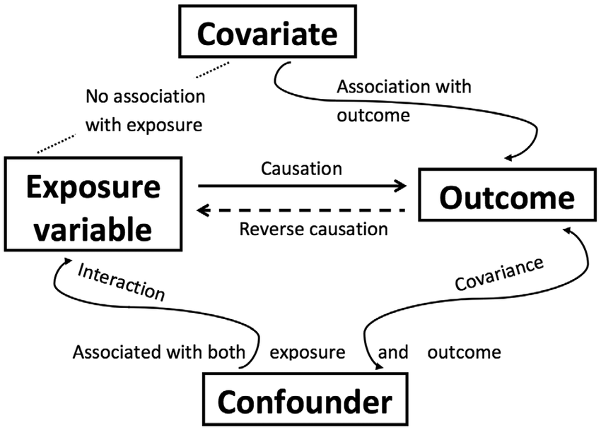
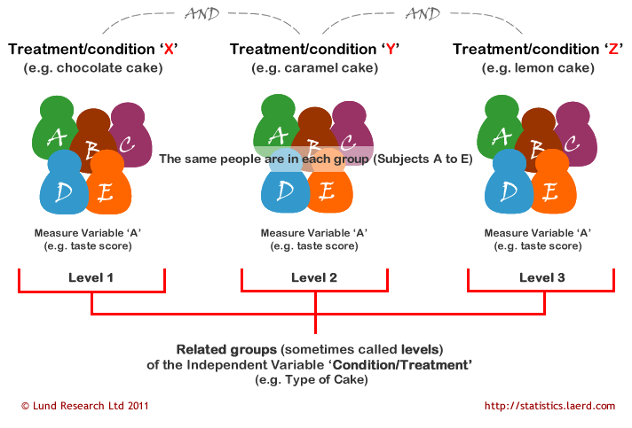

Analysis of Variance
ANOVA
Regression analysis
Regression analysis attempts to explain data (the dependent variable scores) in terms of a set of independent variables or predictors (the model) and a residual component (error). Typically, a researcher who applies regression is interested in predicting a quantitative dependent variable from one or more quantitative independent variables, and in determining the relative contribution of each independent variable to the prediction: there is interest in what proportion of the variation in the dependent variable can be attributed to variation in the independent variable(s).
Regression also may employ categorical (also known as nominal or qualitative) predictors: the use of independent variables such as sex, marital status and type of teaching method is common.
Moreover, as regression is the elementary form of GLM, it is possible to construct regression GLMs equivalent to any ANOVA and ANCOVA GLMs by selecting and organizing quantitative variables to act as categorical variables. Nevertheless, the convention of referring to these particular quantitative variables as categorical variables will be maintained.
Analysis of variance
ANOVA also can be thought of in terms of a model plus error. Here, the dependent variable scores constitute the data, the experimental conditions constitute the model and the component of the data not accommodated by the model, again, is represented by the error term. Typically, the researcher applying ANOVA is interested in whether the mean dependent variable scores obtained in the experimental conditions differ significantly. This is achieved by determining how much variation in the dependent variable scores is attributable to differences between the scores obtained in the experimental conditions, and comparing this with the error term, which is attributable to variation in the dependent variable scores within each of the experimental conditions: there is interest in what proportion of variation in the dependent variable can be attributed to the manipulation of the experimental variable(s).
Although the dependent variable in ANOVA is most likely to be measured on a quantitative scale, the statistical comparison is drawn between the groups of subjects receiving different experimental conditions and is categorical in nature, even when the experimental conditions differ along a quantitative scale. Therefore, ANOVA is a particular type of regression analysis that employs quantitative predictors to act as categorical predictors.
Analysis of covariance
As ANCOVA is the statistical technique that combines regression and ANOVA, it too can be described in terms of a model plus error. As in regression and ANOVA, the dependent variable scores constitute the data, but the model includes not only experimental conditions, but also one or more quantitative predictor variables. These quantitative predictors, known as covariates (also concomitant or control variables), represent sources of variance that are thought to influence the dependent variable, but have not been controlled by the experimental procedures. ANCOVA determines the covariation (correlation) between the covariate(s) and the dependent variable and then removes that variance associated with the covariate(s) from the dependent variable scores, prior to determining whether the differences between the experimental condition (dependent variable score) means are significant.
As mentioned, this technique, in which the influence of the experimental conditions remains the major concern, but one or more quantitative variables that predict the dependent variable also are included in the GLM, is labelled ANCOVA most frequently, and in psychology is labelled ANCOVA exclusively (e.g. Cohen & Cohen, 1983; Pedhazur, 1997, cf. Cox & McCullagh, 1982). A very important, but seldom emphasized, aspect of the ANCOVA method is that the relationship between the covariate(s) and the dependent variable, upon which the adjustments depend, is determined empirically from the data.
GLM approach
1. Conceptually, a major advantage is the continuity the GLM reveals between regression, ANOVA and ANCOVA. Rather than having to learn about three apparently discrete techniques, it is possible to develop an understanding of a consistent modelling approach that can be applied to the different circumstances covered by regression, ANOVA and ANCOVA. A number of practical advantages also stem from the utility of the simply conceived and easily calculated error terms. The GLM conception divides data into model and error, and it follows that the better the model explains the data, the less the error. Therefore, the set of predictors constituting a GLM can be selected by their ability to reduce the error term. Comparing a GLM of the data that contains the predictor(s) under consideration with a GLM that does not, in terms of error reduction, provides a way of estimating effects that is both intuitively appreciable and consistent across regression, ANOVA and ANCOVA applications.
2. Moreover, as most GLM assumptions concern the error terms, residuals, the error term estimates, provide a common means by which the assumptions underlying regression, ANOVA and ANCOVA can be assessed. This also opens the door for sophisticated statistical techniques, developed primarily to assist regression error analysis, to be applied to both ANOVA and ANCOVA.
3. Finally, recognizing ANOVA and ANCOVA as instances of the GLM also provides connection to an extensive and useful literature on methods, analysis strategies and related techniques, such as structural equation modelling, which are pertinent to experimental and non-experimental analyses alikeANCOVA
ANCOVA (Analysis of Covariance) Overview
ANCOVA is a blend of ANOVA and regression, allowing researchers to adjust for the effects of one or more continuous covariates that might influence the dependent variable. This method is useful for enhancing the precision of the analysis by controlling for variables that are not the main focus of the study but could affect the outcome.
Covariates: These are variables that are expected to influence the dependent variable. They are included in the ANCOVA model to control for their effects, thus isolating the effect of the independent variable(s) more effectively. Covariates are continuous predictor variables, unlike the categorical factors in ANOVA.
Confounding Variables: Unlike covariates, which are related only to the dependent variable, confounding variables affect both the independent and dependent variables. They introduce spurious associations, making it hard to discern the true effect of the independent variable.

Reducing Within-Group Error Variance
By incorporating covariates into the analysis, ANCOVA can minimize the error variance within groups. This is crucial for:
Maximizing the between-groups variance, which helps in detecting true effects of the treatments or conditions being studied.
Enhancing the statistical power of the test, leading to a larger F-statistic and more robust conclusions.
Importance of Independence: The covariate should not be affected by the treatment or condition. If there is a significant relationship between the covariate and the treatment, then the covariate may actually be a confounder rather than just a covariate. This complicates the analysis because it suggests that adjustments for this variable might need more sophisticated methods like mediation analysis, rather than just control through ANCOVA.
Testing Independence: This can be assessed by using a one-way ANOVA to check if the covariate significantly varies across the treatment groups. If it does, this violates the assumption of independence, indicating that the covariate might interact with the independent variable(s) in influencing the dependent variable.
ANCOVA Model
The general linear model (GLM) for ANCOVA is expressed as: \[ Y_{ij} = \mu + \alpha_j + \beta Z_{ij} + \epsilon_{ij} \]
- \(\mu\) is the overall mean.
- \(\alpha_j\) is the effect of the jth treatment.
- \(\beta\) is the regression coefficient for the covariate.
- \(Z_{ij}\) is the score of the covariate for the ith subject in the jth group.
- \(\epsilon_{ij}\) represents the random error.
This model combines the categorical treatment effects (as in ANOVA) with the continuous influence of the covariates (as in regression). The regression coefficient \(\beta\) shows how changes in the covariate are associated with changes in the dependent variable, independent of the treatment effect.
One-way ANOVA
Introduction
These are models for data from experiments where several groups are compared, and where the sample sizes are equal for all groups. Independence of data values is a crucial assumption for these models. If they are not independent, then you might be able to use one of the alternatives. Other assumptions strictly needed for these models are homogeneity of error variance and normality of the observations within each group. But these are not as important as the independence assumption (unless severely violated).
The one-way analysis of variance (ANOVA) is used to test the difference in our dependent variable between three or more different groups of observations. Our grouping variable is our independent variable. In other words, we use the one-way ANOVA when we have a research question with a continuous dependent variable and a categorical independent variable with three or more categories in which different participants are in each category.
The one-way ANOVA is also known as an independent factor ANOVA (note that it is NOT the same as a factorial ANOVA, which means there are two or more IVs!).
The mathematical formula for one-way ANOVA can be expressed as: Total Sum of Squares (SST) = Sum of Squares Between Groups (SSB) + Sum of Squares Within Groups (SSW)
Model Representation:
\(Y_{ij} = \mu + \alpha_j + \epsilon_{ij}\)
- \(Y_{ij}\): The response variable.
- \(\mu\): The overall mean of the response.
- \(\alpha_j\): The effect of the \(j\)th group.
- \(\epsilon_{ij}\): The random error component.
Components of Variance: - Total Sum of Squares (SST): Represents the total variation in the data. - Sum of Squares Between Groups (SSB): Represents the variation between the means of the groups. - Sum of Squares Within Groups (SSW): Represents the variation within each group.
Purpose and Hypotheses of One-way ANOVA: - Omnibus Test: One-way ANOVA is an omnibus statistic used to test if there is any difference among the group means. - Null Hypothesis (H0): There is no difference in means between the groups; all group means are the same. - Alternative Hypothesis (H1): There is a difference in means between the groups; at least one group has a significantly different mean compared to the other groups.
Additional Notes: - One-way ANOVA does not specify where the differences lie between the means. For identifying specific differences, one needs to perform planned contrasts or post-hoc procedures, which are discussed in subsequent chapters.
This summary captures the essence of the concepts related to one-way ANOVA as presented in the image. If you need further explanation on any of these points or additional statistical concepts, feel free to ask!
Modeling Assumptions and Basic Analysis
The model for the data throughout this chapter is assumed to be \[ y_{i j}=\mu_{i}+\varepsilon_{i j} \] where the \(y_{i j}\) are the observed data, with \(i=1, \ldots, g\) indicating group and \(j=1, \ldots, n\) indicating measurement observed within a group. This is a full-rank parameterization, unlike the default PROC GLM parameterization, which is not of full rank since it includes the “intercept” term \(\gamma\).
The \(\mu_{i}\) are assumed to be fixed, unknown population mean values, and the errors \(\varepsilon_{i j}\) are assumed to be random variables that
- have mean zero,
- have constant variance \(\sigma^{2}\),
- are independent, and
- are normally distributed.
Constant Variance
The assumption of constant variance is also called homoscedasticity, and its violation is called heteroscedasticity. As it turns out, at least in the balanced one-way model, heteroscedasticity is not necessarily much of a problem, and inferences can still be approximately valid with mild violations of this assumption.
Levene’s Test for Homogeneity
There are also formal statistical tests for homoscedasticity, available with the HOVTEST option in the GLM MEANS statement; you can use this in conjunction with the informal descriptive and graphical assessments.
proc glm data=Wloss;
class Diet;
model Wloss=Diet;
means Diet / hovtest;
run; Independence
The assumption that the measurements are independent is crucial. In the extreme, its violation can lead to estimates and inferences that are effectively based on much less information than it might appear that you have, based on the sample size of your data set. Common ways for this assumption to be violated include
- there are repeated measurements on the subjects (measurements on the same subject are usually correlated),
- subjects are “paired” in some fashion, such as the husband/wife
- the data involve time series or spatial autocorrelation.
As with heteroscedasticity, autocorrelation can be diagnosed with informal graphical and formal inferential measures, but the other two violations (which are probably more common in ANOVA) require knowledge of the design for the data—how it was collected. You can check for the various types of dependence structure using hypothesis tests, but, again, testing methods should not be used exclusively to diagnose seriousness of the problem.
Normality
It is usually not critical that the distribution of the response be precisely normal: the Central Limit Theorem states that estimated group means are approximately normally distributed even if the observations have non-normal distributions. This happy fact provides approximate largesample justification for the methods described in this chapter, as long as the other assumptions are valid. However, if the sample sizes are small and the distributions are not even close to normal, then the Central Limit Theorem may not apply.
Testing the Normality Assumption in ANOVA
proc glm data=Wloss;
class Diet;
model Wloss=Diet;
output out=wlossResid r=wlossResid;
run;
proc univariate data=wlossResid normal;
var wlossResid;
ods select TestsForNormality;
run; Check Assumptions for One-Way ANOVA
Assumptions for One-Way ANOVA: 1. Normal Distribution of the Dependent Variable: - Methods to check: - Shapiro-Wilk test - Q-Q plot - Analysis of skewness and kurtosis - Visual inspection of data distribution
- Homogeneity of Variances:
- Tested using Levene’s test.
- Dependent Variable is Interval or Ratio:
- This indicates that the dependent variable should be continuous.
- Independence of Scores:
- Scores must be independent between groups.
Assumptions Cannot be Directly Tested: - Assumptions 3 and 4 are based on knowledge of the data rather than empirical testing.
Response to Assumption Violations
- Normality Satisfied and Homogeneity of Variance
Satisfied:
- Use one-way ANOVA (standard ANOVA function).
- Normality Satisfied but Homogeneity of Variance Not
Satisfied:
- Use Welch’s F-test (modified ANOVA function that does not assume equal variances).
- Normality Not Satisfied (Regardless of Homogeneity of
Variance):
- Use Kruskal-Wallis test, which is a non-parametric alternative to the one-way ANOVA.
Robustness of ANOVA
- One-way ANOVA is somewhat robust to violations of normality and
homogeneity of variance, but this robustness applies primarily when:
- Group sizes and variances are equal or nearly equal.
- Variances should not differ drastically (e.g., no more than a 2:1 ratio).
- Group sizes should not be extremely unbalanced (e.g., no fewer than 10 cases in the smallest group).
Implications of Violation:
- If the group with the larger variance also has more cases, it can lead to an F-statistic that is non-significant or smaller than it should be.
- Conversely, if the group with the larger variance has fewer cases, the F-statistic can be misleadingly high (significant or larger than it should be).
Parameter Estimates
Means and SD
The estimated population means are the individual sample means for each group, \[ \hat{\mu}_{i}=\bar{y}_{i}=\frac{\sum_{j=1}^{n} y_{i j}}{n}, \] and the estimated common variance of the errors is the pooled mean squared error (MSE), \[ \hat{\sigma}^{2}=\mathrm{MSE}=\frac{\sum_{i=1}^{g} \sum_{j=1}^{n}\left(y_{i j}-\bar{y}_{i}\right)^{2}}{g(n-1)} \] These formulas are special cases of the general formulas \(\hat{\boldsymbol{\beta}}=\left(\mathbf{X}^{\prime} \mathbf{X}\right)^{-1} \mathbf{X}^{\prime} \mathbf{Y}\) and \(\hat{\sigma}^{2}=(\mathbf{Y}-\mathbf{X} \hat{\boldsymbol{\beta}})^{\prime}(\mathbf{Y}-\mathbf{X} \hat{\boldsymbol{\beta}}) / d f\); here the \(\mathbf{X}\) matrix is full rank.
Simultaneous Confidence Intervals
The general form of the simultaneous confidence interval \[ \mathbf{c}^{\prime} \hat{\boldsymbol{\beta}} \pm c_{\alpha} s . e .\left(\mathbf{c}^{\prime} \hat{\boldsymbol{\beta}}\right) \] produces intervals for the difference of means \(\mu_{i}-\mu_{i^{\prime}}\) having the form \[ \bar{y}_{i}-\bar{y}_{i^{\prime}} \pm c_{\alpha} \hat{\sigma} \sqrt{2 / n} \] where \(c_{\alpha}\) is a critical value that is selected to make the \(\mathrm{FWE}=\alpha .\) The term \(\hat{\sigma} \sqrt{2 / n}\) is the square root of the estimated variance of the difference, also called the standard error of the estimated difference.
In the case of non-multiplicity-adjusted confidence intervals, you set \(c_{\alpha}\) equal to the \(1-\alpha / 2\) quantile of the \(t\) distribution, \(t_{1-\alpha / 2, g(n-1)} .\) Each confidence interval thus constructed will contain the true difference \(\mu_{i}-\mu_{i^{\prime}}\) with confidence \(100(1-\alpha) \%\).
However, when you look at many intervals (say, \(k\) of them) then all \(k\) intervals will contain their respective true differences simultaneously with much lower confidence. The Bonferroni inequality gives a pessimistic estimate of the simultaneous confidence of these \(k\) non multiplicity-adjusted intervals as \(100 \times(1-k \alpha) \%\). This implies that you can construct Bonferroni-adjusted confidence intervals by setting \(c_{\alpha}=t_{1-\alpha^{\prime} / 2, g(n-1)}\), where \(\alpha^{\prime}=\alpha / k\). However, the Bonferroni method is conservative: the value \(c_{\alpha}=t_{1-\alpha^{\prime} / 2, g(n-1)}\) is larger than it needs to be, in the sense that the actual simultaneous confidence level will be somewhat larger than the nominal level \(100(1-\alpha) \%\).
Relationship Between F-test and T-test
Relationship Between F-test and T-test
ANOVA (Analysis of Variance) simultaneously examines for differences between any number of conditions while maintaining the Type I error rate at a specified significance level, typically 0.05. ANOVA can be thought of as an extension of the t-test for more than two conditions, maintaining Type I error constancy. This is evident when ANOVA is applied to just two conditions, in which case it effectively becomes identical to performing a t-test. The F and t statistics derived in such cases will directly correspond, resulting in identical p-values.
Transformation Between F and T Statistics: If you are working with two groups and conduct an F-test, you can directly convert the F-value to a t-statistic (and vice versa) using the following formulas: \[ F = t^2 \] \[ t = \sqrt{F} \] This conversion is useful if you initially conduct one test and then realize you need the other for comparison or consistency in reporting.
One-Tailed T-Test vs. ANOVA: Despite the direct relationship between t and F values, confusion may arise, especially under specific testing conditions like directional hypotheses. For instance, a one-tailed t-test assessing a directional hypothesis may yield significant results (e.g., \(t(20) = 1.725, p = 0.05\)), but an ANOVA performed on the same data could yield an F-value (e.g., \(F(1,20) = 2.976, p = 0.100\)) that is not significant at a 0.05 level. This discrepancy arises because the F-test inherently addresses a two-tailed question even when used in a one-tailed format, as it does not inherently support directional hypotheses due to its reliance on squared differences (removing directionality).
Implications of F-test Characteristics: The F-test is fundamentally a one-tailed test, but it does not inherently support testing directional hypotheses. It’s designed to compare variances and, as such, examines whether one variance is significantly greater than another without implying a direction (positive or negative difference). This is critical to understand when choosing between a one-tailed or two-tailed F-test:
- One-Tailed F-Test: Appropriate if your research hypothesis predicts a specific directional effect (positive or negative).
- Two-Tailed F-Test: More suitable for non-directional hypotheses or when the direction of the effect is not specified.
Understanding Test Distributions: The choice between a one-tailed and a two-tailed test also reflects the underlying distribution of the test statistic. Symmetrical distributions like the t and z distributions inherently support two-tailed testing. In contrast, asymmetrical distributions like those used in F-tests and chi-square tests inherently do not have a “one-tailed vs. two-tailed” option as they are based on distributions with only one tail. This structural aspect of the test statistic dictates how hypothesis testing is approached, influencing the interpretation and application of test results.
Statistical Power: A one-tailed test provides greater statistical power than a two-tailed test at the same alpha level, assuming the direction of the effect is correctly specified. This is because a one-tailed test focuses the statistical analysis on one direction, increasing the ability to detect an effect if one exists in that specified direction.
R Implementation
df.residualreturns the degrees of freedom of the residualcoefreturns the estimated coefficients (and sometimes their standard deviations)residualsreturns residualsdeviancereturns the variancefittedreturns the fitted valuelogLikcalculates the log-likelihood and returns the number of argumentsAICcomputes the Akaike information criterion (AIC) (depending on logLik())
## Date exploration
Intelligenz <- data.frame(IQ.Werte=c(99, 131, 118, 112, 128, 136, 120, 107,
134, 122,134, 103, 127, 121, 139, 114,
121, 132,120, 133, 110, 141, 118, 124,
111, 138, 120,117, 125, 140, 109, 128,
137, 110, 138, 127, 141, 119, 148),
Fach=c(rep(1,10),rep(2,8),rep(3,9),rep(4,12)))
Intelligenz$Fach <- factor(Intelligenz$Fach,labels=c("I", "II", "III","IV"))
## Compute summary statistics
group_by(Intelligenz, Fach) %>%
dplyr::summarise(
count = n(),
mean = mean(IQ.Werte, na.rm = TRUE),
sd = sd(IQ.Werte, na.rm = TRUE)
)## Visualize your data with ggpubr
# library("ggpubr")
ggboxplot(Intelligenz, x = "Fach", y = "IQ.Werte",
color = "Fach",
palette = c("#00AFBB", "#E7B800", "#FC4E07","#E7298A"),
order = c("I","II","III","IV"),
ylab = "IQ.Werte", xlab = "Fach")
## Model Fitting
Intelligenz.aov <- aov(IQ.Werte~Fach, data=Intelligenz)
summary(Intelligenz.aov)## Df Sum Sq Mean Sq F value Pr(>F)
## Fach 3 319 106.4 0.736 0.538
## Residuals 35 5060 144.6SAS Implementation
Comparing Weight Loss for Five Different Regimens Ott (1988) reports an experiment undertaken to evaluate the effectiveness of five weightreducing agents. There are 10 male subjects in each group who have been randomly assigned to one of the regimens A, B, C, D, or E. This is a classic example of the balanced one-way ANOVA setup. After a fixed length of time, the weight loss of each of the 50 subjects is measured. The goal of the study is to rank the treatments, to the extent possible, using the observed weight loss data for the 50 subjects. These box plots are convenient for depicting and comparing the distributions of the data in each treatment group.
data Wloss;
do Diet = 'A','B','C','D','E';
do i = 1 to 10;
input Wloss @@;
output;
end;
end;
datalines;
12.4 10.7 11.9 11.0 12.4 12.3 13.0 12.5 11.2 13.1
9.1 11.5 11.3 9.7 13.2 10.7 10.6 11.3 11.1 11.7
8.5 11.6 10.2 10.9 9.0 9.6 9.9 11.3 10.5 11.2
8.7 9.3 8.2 8.3 9.0 9.4 9.2 12.2 8.5 9.9
12.7 13.2 11.8 11.9 12.2 11.2 13.7 11.8 11.5 11.7
;
proc sgplot data=Wloss;
vbox Wloss/category=Diet;
run;Model Diagnosis
- Homogeneity Test
- Homogeneity of variance assumption using Plot
- Homogeneity of variance assumption using Levene’s test, which is less sensitive to departures from normal distribution. (insensitive to deviation from normal distribution)
- Homogeneity of variance assumption with no assumption of equal variances (relaxes the homogeneity of variance assumptions)
- Normality assumption
- Multiple Test
Homogeneity Test
## Check the homogeneity of variance assumption
plot(Intelligenz.aov, 1)
## Levene’s test, Homogeneity of variance assumption
# library(car)
leveneTest(IQ.Werte ~ Fach, data = Intelligenz)## With no assumption of equal variances
oneway.test(IQ.Werte~Fach, data=Intelligenz)##
## One-way analysis of means (not assuming equal variances)
##
## data: IQ.Werte and Fach
## F = 0.64123, num df = 3.000, denom df = 18.758, p-value = 0.598Normality assumption
Using QQ Plot or Shapiro–Wilk test to test residuals
## Check the normality assumption
plot(Intelligenz.aov, 2)
## Shapiro–Wilk test to test residuals
## Extract the residuals and run Shapiro-Wilk test
aov_residuals <- residuals(object = Intelligenz.aov )
shapiro.test(x = aov_residuals )##
## Shapiro-Wilk normality test
##
## data: aov_residuals
## W = 0.96021, p-value = 0.1813Violation of assumptions
Random Effects Models
\[Y_{ij} = \mu + \alpha_i + \epsilon_{ij},\] We assume \(\alpha_i \; \textrm{i.i.d.} \sim N(0, \sigma_{\alpha}^2).\) and \[E[Y_{ij}] = \mu\] \[\text{Var}(Y_{ij}) = \sigma_{\alpha}^2 + \sigma^2\] \[\text{Cor}(Y_{ij}, Y_{kl}) = \left\{ \begin{array}{cc} 0 & i \neq k \\ \sigma_{\alpha}^2 / (\sigma_{\alpha}^2 + \sigma^2) & i = k, j \neq l (\text{intraclass correlation (ICC)})\\ 1 & i = k, j = l \end{array} \right.\]
MLE is not usable for parameter estimation for the variance components \(\sigma_a^2\) and \(\sigma^2\), Restricted maximum likelihood (REML) is applied here. REML is less biased. The parameter \(\mu\) is estimated with maximum-likelihood assuming that the variances are known.
Non-Parametric Test
Non-parametric alternative to one-way ANOVA test, Kruskal-Wallis rank sum test, which can be used when ANOVA assumptions are not met.
kruskal.test(IQ.Werte~Fach, data=Intelligenz)Unbalanced One-Way ANOVA and Analysis-of-Covariance (ANCOVA)
These data are similar to the balanced ANOVA except that sample sizes may be unbalanced, or the comparisons between means might be done while controlling one or more covariates (e.g., confounding variables, pre-experimental measurements). The distributional assumptions are identical to those of the ANOVA, with the exception that for ANCOVA, the normality assumption must be evaluated by using residuals and not actual data values. When discussing statistical analysis involving Unbalanced One-Way ANOVA and Analysis-of-Covariance (ANCOVA), it’s crucial to consider how these methods differ from a balanced ANOVA and what specific challenges and adjustments they require.
Unbalanced One-Way ANOVA
Unbalanced ANOVA refers to situations where the sample sizes across the groups being compared are not equal. This imbalance can affect the analysis in several ways:
Power and Error Rates: Unequal group sizes can lead to reductions in statistical power and can impact the error rates. In general, when group sizes are equal, the power of the ANOVA test is maximized, and the estimation of variance is more reliable.
Variance Estimation: In a balanced ANOVA, the estimation of within-group and between-group variances are straightforward and less susceptible to sample size differences. In an unbalanced design, the variances might be estimated with bias if the larger sample sizes overly influence the mean estimates.
Statistical Techniques: Certain adjustments may be necessary when dealing with unbalanced data. For instance, using Type III sum of squares in the ANOVA calculations helps handle the imbalance by making the sums of squares independent of the order in which variables are entered into the model. This is particularly important in software like SAS or SPSS, where the type of sums of squares can be specified.
Analysis-of-Covariance (ANCOVA)
ANCOVA is an extension of ANOVA that introduces covariates into the analysis. These covariates are continuous variables that potentially influence the dependent variable but are not the main focus of the research. For instance, if you are studying the effect of a diet on weight loss, age might be a covariate if it’s believed to affect weight loss but is not the main variable of interest.
Control for Confounding: ANCOVA allows researchers to statistically control for the effects of covariates, which might confound the relationship between the dependent variable and the independent variable(s). This enhances the accuracy of the conclusions about the main effects.
Assumption of Homogeneity of Regression Slopes: One critical assumption in ANCOVA is that the relationship (slope) between the covariate(s) and the dependent variable must be the same across all groups (levels of the independent variable). This assumption is known as the homogeneity of regression slopes and is crucial for the proper application of ANCOVA.
Evaluating Normality Using Residuals: Unlike ANOVA, where normality is typically assessed using the actual data values or transformed values, ANCOVA requires the evaluation of normality through the residuals. Residuals are the differences between the observed values and the values predicted by the covariate(s). Analyzing residuals helps ensure that the adjustments made for the covariates are appropriately accounting for their effects, and that the error terms (residuals) of the model distribute normally.
Practical Implications
- Statistical Software: When performing either unbalanced ANOVA or ANCOVA, statistical software like R, SPSS, or SAS can be utilized to handle complex calculations, and they offer options to adjust for imbalances and include covariates effectively.
- Diagnostic Checks: It is essential to perform diagnostic checks to validate the assumptions of homogeneity of variances, normality of residuals, and homogeneity of regression slopes. Plots like residual plots, Q-Q plots, or leverage plots can be particularly helpful.
In summary, while unbalanced ANOVA and ANCOVA introduce more complexity into the analysis, they provide powerful tools for dealing with real-world data where conditions are rarely perfectly balanced or free from confounding variables. Understanding how to adjust for these complexities can significantly enhance the validity and reliability of the study’s findings.
Factorial ANOVA
Independent Factorial ANOVA
Factorial ANOVA is a statistical method that extends the basic principles of a one-way ANOVA to analyze the effects of two or more independent variables simultaneously on a continuous dependent variable. This methodology is highly versatile, supporting designs that assess both the main effects of each factor and the interactions between them, which can reveal more complex patterns of influence on the dependent variable. Here’s a breakdown of the different types of factorial designs, along with explanations of factorial ANOVA and its implications for interpreting experimental results:
Types of Factorial Designs:
Independent Factorial Design: This design involves multiple between-group independent variables (IVs). Each factor is manipulated across different groups of subjects without any repetition within the same subject.
Repeated Measures Factorial Design: Known as within-group designs, these involve one or more factors being repeated within the same subjects. This can also be referred to as a two-way (or three-way, etc., depending on the number of IVs) repeated measures ANOVA, where each subject is exposed to each condition.
Mixed Factorial Design: This design incorporates elements of both independent and repeated measures designs, where some factors are manipulated between groups and others within the same subjects.
Understanding Factorial ANOVA:
One-way ANOVA: Primarily tests for differences among two or more independent groups based on a single independent variable. It’s used to determine whether the means of the groups are significantly different, such as comparing the performance of students from different schools.
Factorial ANOVA: Unlike one-way ANOVA, factorial ANOVA can test the effects of two or more independent variables on a dependent variable. This approach not only examines the main effects of each independent variable but also explores the interaction effects between them. For instance, it could assess how different teaching methods (one factor) affect various age groups (another factor) concerning student performance.
Repeated Factorial ANOVA
Repeated measures factorial designs are specialized instances of randomized block designs, designed to handle data where measurements are taken on the same subjects under different conditions. Unlike designs where each measure is taken on independent subjects, these designs consider the correlation between measures on the same subjects.
Randomized Block and Repeated Measures Designs
In randomized block designs, subjects are grouped into blocks based on one or more characteristics that are expected to affect the outcome. For example, subjects in one block might have high IQ scores, while those in another have low IQ scores. Each block of subjects then experiences the same experimental conditions, allowing the experiment to control for the blocking variable.
When each block consists of only one subject who undergoes all conditions, this setup becomes a repeated measures design. This design is powerful for reducing variability caused by differences between subjects because each subject acts as their own control.
Counterbalancing in Crossover Designs
Counterbalancing is used to control for order effects in studies where subjects undergo multiple conditions. This is crucial because the order in which conditions are presented can influence the results. For instance, fatigue or learning might skew results in later conditions if not properly managed.
To manage this, researchers can use several strategies:
Full Crossover Design: All possible orders of conditions are used. For example, with three conditions (A, B, C), six permutations (ABC, ACB, BAC, BCA, CAB, CBA) ensure that each condition’s effect is not confounded by its position in the sequence. Subjects are assigned to each order, balancing out any order effects.
Factorial Model Construction: By including all orders and crossing them with other experimental factors, a factorial model can be constructed. This model will account for variances due to order effects and their potential interactions with other variables in the study.
Latin Square Designs
Latin square designs offer a structured way to arrange treatments so that each treatment appears only once in each row or column. This design is particularly effective for controlling order effects when there are more conditions:
Basic Setup: Each condition appears exactly once in each row and each column, an approach that efficiently manages the number of required subjects and conditions.
Balanced Latin Squares: Sometimes referred to as “digram-balanced,” these are designed such that each condition precedes and follows every other condition. This balance only works when the number of conditions is even.
Adaptation for Odd Numbers of Conditions: When the number of conditions is odd, balanced Latin squares are not feasible. Instead, researchers might use randomly permuted Latin squares to achieve a similar balance.
Mixed factorial design
Mixed Factorial Design Overview
Mixed factorial designs blend characteristics of both repeated measures and independent groups factorial designs. In this type of design, at least one factor is a “within-subjects” factor (meaning the same subjects are measured under different conditions), and at least one factor is a “between-subjects” factor (meaning different groups of subjects are measured under each condition).
General Linear Model (GLM) for Mixed Factorial ANOVA
The GLM for mixed factorial ANOVA accommodates the interaction between independent and repeated measures within the same experimental framework. This model allows researchers to assess not only the main effects of each type of factor but also their interaction effects, which can reveal how different levels of one factor affect responses at different levels of another factor across different groups of subjects.
Equation:
\[ Y_{ijk} = \mu + \tau_i + \alpha_j + (\tau\alpha)_{ij} + \beta_k + (\tau\beta)_{ik} + (\alpha\beta)_{jk} + (\tau\alpha\beta)_{ijk} + \epsilon_{ijk} \]
- \(\mu\) is the overall mean or grand mean of all observations.
- \(\tau_i\) is the effect of the ith level of the within-subjects factor.
- \(\alpha_j\) is the effect of the jth level of the between-subjects factor.
- \(\beta_k\) represents the random effects of subjects within the between-subjects factor.
- \((\tau\alpha)_{ij}\) is the interaction effect between the within-subjects factor and the between-subjects factor.
- \((\tau\beta)_{ik}\), \((\alpha\beta)_{jk}\), and \((\tau\alpha\beta)_{ijk}\) are the higher-level interactions involving subjects.
- \(\epsilon_{ijk}\) is the random error associated with each observation.
Key Features of Mixed Factorial Designs:
Complex Interactions: This design allows for the examination of interactions between subject-based (within-subject) factors and group-based (between-subject) factors, providing a deeper understanding of how different variables influence each other.
Efficient Use of Data: By combining both within-subjects and between-subjects factors, mixed designs can make more efficient use of data than pure between-subjects designs, particularly in terms of controlling for potential confounding variables that vary between individuals.
Flexibility: Mixed designs offer great flexibility in experimental setup, allowing researchers to tailor their studies to specific research questions that involve both repeated measures and independent group comparisons.
Statistical Analysis Considerations:
- Error Terms: The error structure in mixed factorial designs can be complex. The model must account for variability between subjects within groups and variability due to repeated measures on the same subjects.
- Sphericity: The assumption of sphericity, which is required in repeated measures ANOVA, must be checked and corrected if violated. This assumption tests whether the variances of the differences between all combinations of related group (level) means are equal.
- Multiple Comparisons: When significant interactions are found, post-hoc tests are often necessary to explore these interactions further. These tests can help clarify which specific levels of the factors differ from each other.
Introduction
\[ Y_{i j k}=\mu+\alpha_{i}+\beta_{j}+(\alpha \beta)_{i j}+\epsilon_{i j k} \] - ai is the main effect of factor \(A\) at leveli - \(\beta \mathrm{j}\) is the main effect of factor \(\mathrm{B}\) at level \(\mathrm{j}\) - \((aß)ij\) is the interaction effect between \(A\) and \(B\) for the level combination i,j (it is not the product ai)
Test: the total sum of squares \[ S S_{T}=S S_{A}+S S_{B}+S S_{A B}+S S_{E} \]
- \(SS_A = \sum_{i=1}^a b n (\widehat{\alpha}_i)^2\) “between rows”
- \(SS_B = \sum_{j=1}^b a n (\widehat{\beta}_j)^2\) “between columns”
- \(SS_{AB} = \sum_{i=1}^a \sum_{j=1}^b n (\widehat{\alpha\beta})_{ij}^2\) “correction”
- \(SS_E = \sum_{i=1}^a \sum_{j=1}^b \sum_{k=1}^n (y_{ijk} - \overline{y}_{ij\cdot})^2\) Error “within cells”
- \(SS_T = \sum_{i=1}^a \sum_{j=1}^b \sum_{k=1}^n (y_{ijk} - \overline{y}_{\cdot\cdot\cdot})^2\) “total”
Marginal Means in Factorial Designs
Marginal means are computed by averaging the means across the levels of other factors in the design, thus isolating the effect of one particular factor. These means are essential for: - Understanding how each factor influences the dependent variable while controlling for the influence of other factors. - Comparing the effects of each level of a factor on the outcome, averaged over the levels of other factors involved in the study.
In factorial ANOVA, marginal means are particularly informative because they reflect the composite effect of interactions between factors on the dependent variable. For example:
- If Factor A (e.g., teaching method) and Factor B (e.g., study time) are being tested, the marginal mean for each level of Factor A would be the average outcome across all levels of Factor B, and vice versa.
- This averaging helps identify if the performance differences are primarily due to one factor regardless of the levels of another, or if the differences are specifically due to interactions between these factors.
Interpretation of Marginal Means:
- In the context of a factorial design, marginal means allow for the comparison of factor effects across different conditions or settings.
- They help in discerning whether the observed differences in outcomes are due to systematic effects of the factors under study or if they stem from the particular combinations of these factors (i.e., interactions).
R implementation
## Date exploration
my_data <- ToothGrowth
# Show a random sample
set.seed(1234)
dplyr::sample_n(my_data, 10)# Convert dose as a factor and recode the levels
my_data$dose <- factor(my_data$dose,
levels = c(0.5, 1, 2),
labels = c("D0.5", "D1", "D2"))
## Compute mean and SD by groups using dplyr R package:
require("dplyr")
group_by(my_data, supp, dose) %>%
summarise(
count = n(),
mean = mean(len, na.rm = TRUE),
sd = sd(len, na.rm = TRUE)
)# Visualize data
# library("ggpubr")
ggboxplot(my_data, x = "dose", y = "len", color = "supp",
palette = c("#00AFBB", "#E7B800"))
## Two-way interaction plot
# library("ggpubr")
ggline(my_data, x = "dose", y = "len", color = "supp",
add = c("mean_se", "dotplot"),
palette = c("#00AFBB", "#E7B800"))
## Model Fitting
## Compute two-way ANOVA test
res.aov2 <- aov(len ~ supp + dose, data = my_data)
summary(res.aov2)## Df Sum Sq Mean Sq F value Pr(>F)
## supp 1 205.4 205.4 14.02 0.000429 ***
## dose 2 2426.4 1213.2 82.81 < 2e-16 ***
## Residuals 56 820.4 14.7
## ---
## Signif. codes: 0 '***' 0.001 '**' 0.01 '*' 0.05 '.' 0.1 ' ' 1## Two-way ANOVA with interaction effect
res.aov3 <- aov(len ~ supp * dose, data = my_data)
res.aov3 <- aov(len ~ supp + dose + supp:dose, data = my_data)
summary(res.aov3)## Df Sum Sq Mean Sq F value Pr(>F)
## supp 1 205.4 205.4 15.572 0.000231 ***
## dose 2 2426.4 1213.2 92.000 < 2e-16 ***
## supp:dose 2 108.3 54.2 4.107 0.021860 *
## Residuals 54 712.1 13.2
## ---
## Signif. codes: 0 '***' 0.001 '**' 0.01 '*' 0.05 '.' 0.1 ' ' 1 ## dose的p值<2e-16（显着），表明剂量水平与显着不同的牙齿长度len 有关。
## supp * dose之间相互作用的p值为0.02（显着），表明dose与牙齿长度len之间的关系取决于supp方法
## 在交互作用不明显的情况下，应使用加性模型。
## Diagnosis
## 1. Compute mean and SD by groups using dplyr R package:
require("dplyr")
group_by(my_data, supp, dose) %>%
summarise(
count = n(),
mean = mean(len, na.rm = TRUE),
sd = sd(len, na.rm = TRUE)
)model.tables(res.aov3, type="means", se = TRUE)## Tables of means
## Grand mean
##
## 18.81333
##
## supp
## supp
## OJ VC
## 20.663 16.963
##
## dose
## dose
## D0.5 D1 D2
## 10.605 19.735 26.100
##
## supp:dose
## dose
## supp D0.5 D1 D2
## OJ 13.23 22.70 26.06
## VC 7.98 16.77 26.14
##
## Standard errors for differences of means
## supp dose supp:dose
## 0.9376 1.1484 1.6240
## replic. 30 20 10## 2. Multiple Test
pairwise.t.test(my_data$len, my_data$dose,
p.adjust.method = "BH")##
## Pairwise comparisons using t tests with pooled SD
##
## data: my_data$len and my_data$dose
##
## D0.5 D1
## D1 1.0e-08 -
## D2 4.4e-16 1.4e-05
##
## P value adjustment method: BH## Multiple pairwise-comparison between the means of groups
TukeyHSD(res.aov3, which = "dose")## Tukey multiple comparisons of means
## 95% family-wise confidence level
##
## Fit: aov(formula = len ~ supp + dose + supp:dose, data = my_data)
##
## $dose
## diff lwr upr p adj
## D1-D0.5 9.130 6.362488 11.897512 0.0e+00
## D2-D0.5 15.495 12.727488 18.262512 0.0e+00
## D2-D1 6.365 3.597488 9.132512 2.7e-06# library(multcomp)
summary(glht(res.aov2, linfct = mcp(dose = "Tukey")))##
## Simultaneous Tests for General Linear Hypotheses
##
## Multiple Comparisons of Means: Tukey Contrasts
##
##
## Fit: aov(formula = len ~ supp + dose, data = my_data)
##
## Linear Hypotheses:
## Estimate Std. Error t value Pr(>|t|)
## D1 - D0.5 == 0 9.130 1.210 7.543 <1e-05 ***
## D2 - D0.5 == 0 15.495 1.210 12.802 <1e-05 ***
## D2 - D1 == 0 6.365 1.210 5.259 <1e-05 ***
## ---
## Signif. codes: 0 '***' 0.001 '**' 0.01 '*' 0.05 '.' 0.1 ' ' 1
## (Adjusted p values reported -- single-step method)## 3. Homogeneity and normality
## Check the homogeneity of variance assumption (outliers)
plot(res.aov3, 1)
## Levene’s test to check the homogeneity of variances.
# library(car)
leveneTest(len ~ supp*dose, data = my_data)## Check the normality assumpttion
plot(res.aov3, 2)
# Extract the residuals, Shapiro-Wilk test
aov_residuals <- residuals(object = res.aov3)
shapiro.test(x = aov_residuals )##
## Shapiro-Wilk normality test
##
## data: aov_residuals
## W = 0.98499, p-value = 0.6694SAS Implementation
data Waste;
do Temp = 1 to 3;
do Envir = 1 to 5;
do rep=1 to 2;
input Waste @@;
output;
end;
end;
end;
datalines;
7.09 5.90 7.94 9.15 9.23 9.85 5.43 7.73 9.43 6.90
7.01 5.82 6.18 7.19 7.86 6.33 8.49 8.67 9.62 9.07
7.78 7.73 10.39 8.78 9.27 8.90 12.17 10.95 13.07 9.76
;
run;
ods graphics on;
proc glm data=Waste;
class Temp Envir;
model Waste = Temp Envir Temp*Envir;
run;
quit;
ods graphics off;
Unbalanced design
With unbalanced designs, LS-means typically are more relevant than arithmetic means for quantifying general population characteristics, since the LS-means estimate the marginal means over a balanced population, whether or not the design itself is balanced; the arithmetic means only estimate the marginal means for a population whose margins match those of the design. In particular, the arithmetic means estimate balanced population margins only when the design itself is balanced. Moreover, the LS-means match the arithmetic means when the design is balanced.
## unequal numbers of subjects in each group.
library(car)
my_anova <- aov(len ~ supp * dose, data = my_data)
Anova(my_anova, type = "III")*** Comparisons of LS-Means with Unbalanced Data;
data Drug;
input Drug Disease @;
do i=1 to 6;
input Response @;
output;
end;
cards;
1 1 42 44 36 13 19 22
1 2 33 . 26 . 33 21
1 3 31 -3 . 25 25 24
2 1 28 . 23 34 42 13
2 2 . 34 33 31 . 36
2 3 3 26 28 32 4 16
3 1 . . 1 29 . 19
3 2 . 11 9 7 1 -6
3 3 21 1 . 9 3 .
4 1 24 . 9 22 -2 15
4 2 27 12 12 -5 16 15
4 3 22 7 25 5 12 .
;
ods graphics on;
proc glm;
class Drug Disease;
model Response = Drug Disease Drug*Disease/ss3;
lsmeans Drug/ pdiff cl adjust=simulate(seed=121211 acc=.0002
report);
run; quit;
ods graphics off; *** Computing LS-Means by Hand;
data Balanced;
do Drug = 1 to 4;
do Disease = 1 to 3;
output;
end;
end;
data DrugPlus; set Drug(where=(Response ^= .)) Balanced;
proc glm data=DrugPlus;
class Drug Disease;
model Response = Drug Disease Drug*Disease;
output out=PredBal(where=(Response = .)) p=pResponse;
proc means data=PredBal;
class Drug;
ways 1;
var pResponse;
run; MANOVA - Multivariate Analysis of Variance
A repeated measures ANOVA is used to determine whether or not there is a statistically significant difference between the means of three or more groups in which the same subjects show up in each group. A repeated measures ANOVA is typically used in two specific situations:
- Measuring the mean scores of subjects during three or more time points.
- Measuring the mean scores of subjects under three different conditions.


General Linear Model (GLM) for Repeated Measures ANOVA
The equation for repeated measures ANOVA is: \[ Y_{ij} = \mu + \pi_i + \alpha_j + (\pi\alpha)_{ij} + \epsilon_{ij} \]
- \(\mu\) is the overall mean or grand mean of the data.
- \(\pi_i\) represents the effect due to the \(i\)-th subject.
- \(\alpha_j\) is the effect of the \(j\)-th condition or treatment.
- \((\pi\alpha)_{ij}\) is the interaction between subject \(i\) and condition \(j\), which usually is not included (set to zero) in simple models for ease and clarity.
- \(\epsilon_{ij}\) is the error term, capturing random effects not explained by the model.
This model accounts for the repeated measures on the same subjects by including a term for each subject, allowing it to analyze within-subject variations effectively.
To ensure valid results from a repeated measures ANOVA, certain assumptions must be met:
Independence: Each observation should be independent of others. This assumption is crucial for any statistical test involving inference. In the context of repeated measures, the design inherently involves related observations (repeated on the same subjects); hence the independence primarily concerns the error terms \(\epsilon_{ij}\), which should be independent.
Normality: The distribution of residuals (not the raw data) should be approximately normally distributed. This can be checked through:
- Histograms or Q-Q plots of the residuals.
- Formal tests of normality such as the Shapiro-Wilk test.
Repeated measures ANOVA is robust against mild violations of normality, especially with larger sample sizes. For severe violations, data transformation or non-parametric alternatives like the Friedman test might be necessary.
Sphericity: The variances of the differences among all combinations of related groups (conditions) must be equal. This assumption, unique to repeated measures and multivariate designs, can be tested using Mauchly’s Test of Sphericity. If sphericity is violated, adjustments such as Huynh-Feldt, Greenhouse-Geisser, or lower-bound corrections are used to correct the degrees of freedom used in F-tests, affecting the p-values.
If assumptions are violated, several strategies can be employed:
- Transforming the data to improve normality or stabilize variances.
- Using corrections for violations of sphericity to ensure valid F-tests.
- Resorting to non-parametric methods when the data significantly deviate from these assumptions.
Other
Heteroscedastic Responses
If the error variances are not constant, then the ordinary methods might be biased (in the sense of providing higher error rates than advertised) or inefficient (in the sense that the method lacks power to detect real differences).
Repeated Measures ANOVA Data
When there are repeated measures on the same experimental unit, the crucial independence assumption that is used for the previous models no longer applies. For example, the data may contain repeated measures on blood pressure for an individual. In such cases, you can model the dependence of blood pressure measurements by using a variety of possible dependence structure models, and perform multiplicity-adjusted analyses within the context of such models. Normality (or at least approximate normality) remains an important assumption for these models.
Multivariate Responses with Normally Distributed Data
In these models, there are multiple measurements on the same individual. While repeated measures models usually assume that the measurements are taken on the same characteristic (like blood pressure), the multivariate response models allow completely different scales of measurement. For example, blood pressure and self-rated anxiety level form a multivariate response vector. Multiple inferences from such data are improved by incorporating the correlations among such measurements. In addition to the normality assumption, the multivariate observation vectors also are assumed independent, with constant covariance matrices. Our suggested method of analysis will allow covariates as well, so you can perform multiple comparisons with multivariate analysis of covariance (MANCOVA) data.
Independent Observations from Parametric Nonnormal Distributions
As an example, suppose you know that the observations are counts of defects on a manufactured item, and you wish to compare shifts A, B, and C. The model used may be Poisson, and you still wish to perform multiple comparisons. In this case, you can use any of several SAS procedures to fit the Poisson model, and can perform adjustments for multiple comparisons easily using the fitted results from such models.
Dependent Observations from Parametric Nonnormal Distributions
Following the previous example, suppose you know that the counts of defects on manufactured items are associated with different machines. You still wish to compare shifts A, B, and C, but you want to account for the machine effect. In this case, you may model the observations on a common machine as dependent, using a random effects model, where the machine effect is considered random. Again the model may be Poisson, but with a repeated measures component. In this case, you can use PROC GLIMMIX both to perform the repeated measures modeling and to perform the multiple comparisons.
Multiple Comparison
Post-hoc Comparisons
Significance of F Statistic: If the overall F statistic from an ANOVA is not statistically significant (i.e., p-value exceeds the alpha level, typically 0.05), it indicates that there is no statistical evidence to suggest that there are any differences among the group means. In such cases, it is standard practice not to perform any further contrasts or post hoc tests because the initial analysis did not reject the null hypothesis of no group differences.
If the F statistic is significant, suggesting differences among the group means, post hoc tests can be used to find out which specific groups differ from each other. Here are some commonly used post hoc tests:
- Tukey’s Honestly Significant Difference (HSD) Test:
- Pros: Well-balanced in terms of Type I error control; not as conservative as Bonferroni, leading to slightly more powerful results where moderate control is sufficient.
- Cons: Can still be too conservative compared to tests without any corrections.
- Bonferroni Correction:
- Method: This test adjusts the p-values by multiplying them by the number of comparisons. For instance, if three t-tests are conducted, each p-value is multiplied by three.
- Pros: Highly conservative, minimizing the risk of Type I errors (false positives).
- Cons: Can drastically reduce statistical power, particularly when many comparisons are made, possibly leading to Type II errors (false negatives).
- Holm-Bonferroni Method:
- Method: A sequential adjustment where the smallest p-value is multiplied by the total number of tests, the next smallest by one fewer, and so on. This provides a step-down method that is less conservative than Bonferroni.
- Pros: Offers a good balance between controlling Type I error and maintaining statistical power.
- Scheffe’s Test:
- Method: A complex formula for calculating adjustments, rarely used due to its complexity and conservativeness.
- Pros: Very robust, as it allows for all possible comparisons post-hoc.
- Cons: May be too conservative and complex for practical use.
- Welch’s F-test:
- Method: Adjusts the degrees of freedom used in the F-test to account for group variances that are unequal. This test is especially useful when the assumption of homogeneity of variances is violated.
- Pros: Provides a more accurate assessment of the significance of the group differences when variances are unequal.
- Kruskal-Wallis Test:
- Method: A non-parametric alternative to ANOVA, used when the data does not meet the assumptions necessary for ANOVA. It compares medians from two or more groups.
- Pros: Does not assume a normal distribution and is useful for ordinal data or skewed distributions.
- Cons: Generally less powerful than ANOVA in detecting differences when the normality assumption is met.
Introduction
Multiplicity Problem
There are real effects from multiplicity.
- confounding effects
- nonresponse effects
- placebo effects
- learning effects
- carryover effects
The problem with all statistical tests is the fact that the (overall) error rate increases with increasing number of tests. \[1 - (1 - \alpha)^m.\]
Error Rates
Comparisonwise Error Rate (CER)
Typical inferences are performed using the \(95 \%\) confidence level or \(5 \%\) significance level. In either case, the comparisonwise error rate (CER) is \(5 \%\). For confidence intervals, CER is defined as \[\mathrm{CER}=P(\text{Interval does not contain the parameter}).\] A typical two-sided confidence interval has the form
(parameter estimate) \(\pm\) (critical value) \(\times\) (standard error of the estimate).
For example, if the parameter of interest is a population mean \(\mu\), and the data are normally distributed, then the usual two-sided \(95 \%\) confidence interval for \(\mu\) is \[ \bar{y} \pm t_{975, n-1} \times s_{y} / \sqrt{n} \] where - \(\bar{y}\) is the estimate of the population mean - \(s_{y}\) is the sample standard deviation - \(n\) is the sample size - \(s_{y} / \sqrt{n}\) is the standard error of the estimated mean.
The critical value is \(t_{975, n-1}\), which is the \(1-0.05 / 2\) quantile of the \(t\) distribution with \(n-1\) degrees of freedom. A one-sided upper confidence interval for \(\mu\) might be all values below \[ \bar{y}+t_{.95, n-1} \times s_{y} / \sqrt{n} \] For tests of hypotheses, CER is defined as \[ \mathrm{CER}=P\left(\text { Reject } H_{0} \mid H_{0}\right. \text { is true). } \]
Familywise Error Rate (FWE)
FWE for Simultaneous Confidence Intervals
The FWE is the probability of at least one erroneous inference, defined for simultaneous confidence intervals as \[\text{FWE (at least one interval is incorrect) 1 (all intervals are correct).}\]
FWE for Multiple Tests of Hypotheses
The family-wise error rate is defined as the probability of rejecting at least one of the true \(H_0\)
In the case of multiple tests of hypotheses, some of the hypotheses \(H_{0 j}\) could be true, and others could be false. Suppose the true state of nature is that the particular null hypotheses corresponding to \(j_{1}, \ldots, j_{m}\) are true, and all other null hypotheses are false. In other words, \(H_{0 j_{1}}, H_{0 j_{2}}, \ldots, H_{0 j_{m}}\) are true, and the remaining \((k-m)\) hypotheses are false. The FWE is then defined as
\[FWE =P( \text{reject at least one of} H_{0 j_{1}}, H_{0 j_{2}}, \ldots, H_{0 j_{m}} \mid H_{0 j_{1}}, H_{0 j_{2}}, \ldots, H_{0 j_{m}} \text{all are true})\].
Control of the FWE: Weak and Strong
An MCP is said to control the FWE in the weak sense if it controls the FWE under the complete null configuration, but not under all other configurations. Despite the fact that the terms “weak control” and “strong control” are used in conjunction with FWE, you should note that they really refer to different error rates. Weak control refers only to controlling the probability that the complete null hypothesis is rejected, and allows Type I errors in excess of the usual 5% value (for example, for the component hypotheses).
A method that controls the FWE in the strong sense will result in a Type I error for any component hypothesis no more than 5% of the time.
Directional Decisions and Type III Error Rates
A directional error (sometimes called a Type III error) is defined as the probability of misclassifying the sign of an effect. If you reject the hypothesis H0 : μ = 0 in favor of the (twosided) alternative HA : μ ≠ 0 using a CER= 0.05 level test, can you then claim that the sign of the true mean μ is the same as the sign of the estimated mean y ?
A type III error is where you correctly reject the null hypothesis, but it’s rejected for the wrong reason. This compares to a Type I error (incorrectly rejecting the null hypothesis) and a Type II error (not rejecting the null when you should). Type III errors are not considered serious, as they do mean you arrive at the correct decision. They usually happen because of random chance and are a rare occurrence.
You can also think of a Type III error as giving the right answer (i.e. correctly rejecting the null) to the wrong question. In other words, both your null and alternate hypotheses may be poorly worded or completely incorrect.
For MCPs, the Type III FWE is the probability that the sign of any tested effect is misclassified.
False Discovery Rate (FDR)
Benjamini and Hochberg (1995) referred to the expected proportion of erroneously rejected null hypotheses among the rejected ones as the False Discovery Rate, or FDR. Formally, for a given family of k hypotheses and a given MCP, let R= number of hypotheses rejected, and let V = the (unknown) number of erroneously rejected ones. Define V/R = 0 in case R=0. Then FDR is the expected value of V/R
\[ \begin{array}{cccc} \hline & H_{0} \text { accepted } & H_{0} \text { rejected } & \text { Total } \\ \hline H_{0} \text { true } & m-V & V & m \\ H_{0} \text { false } & k-m-R+V & R-V & k-m \\ \text { Total } & k-R & R & k \\ \hline \end{array} \]
\[ \mathrm{FDR}=E(V / R) \] (assuming \(0 / 0\) is defined as 0 ), whereas \[ \mathrm{FWE}=P(V>0) \] Under the overall null hypothesis, FDR and FWE are equal, since in this case \(V / R=1\) when there is at least one rejection, and \(V / R=0\) when there are no rejections.
The adjusted P
Marginal p-value is based on the marginal p-values, which do not account for a multiplicity adjustment.
The adjusted P value is the smallest familywise significance level at which a particular comparison will be declared statistically significant as part of the multiple comparison testing. A separate adjusted P value is computed for each comparison in a family of comparisons.
The following show the R code about teh comparsion of adjusted and un-adjusted p-values
library(multcomp)
data(thuesen,package = "ISwR")
thuesen <- read.sas7bdat("~/Desktop/SASUniversityEdition/myfolders/Daten/thuesen.sas7bdat")
thuesen.lm <- lm(short.velocity ~ blood.glucose,data = thuesen)
thuesen.mc <- glht(thuesen.lm, linfct = diag(2))
## With adjustment.
summary(thuesen.mc,
test = adjusted(type = "bonferroni"))
## without adjustment.
summary(thuesen.mc, test = univariate())Furthermore, there are different methods for p value adjust.
Input = ("
Food Raw.p
Blue_fish .34
Bread .594
Butter .212
Carbohydrates .384
Cereals_and_pasta .074
Dairy_products .94
Eggs .275
Fats .696
Fruit .269
Legumes .341
Nuts .06
")
Data = read.table(textConnection(Input),header=TRUE)
## Order data by p-value
Data = Data[order(Data$Raw.p),]
## Perform p-value adjustments and add to data frame
Data$Bonferroni =
p.adjust(Data$Raw.p,
method = "bonferroni")
Data$BH =
p.adjust(Data$Raw.p,
method = "BH")
Data$Holm =
p.adjust(Data$ Raw.p,
method = "holm")
Data$Hochberg =
p.adjust(Data$ Raw.p,
method = "hochberg")
Data$Hommel =
p.adjust(Data$ Raw.p,
method = "hommel")
Data$BY =
p.adjust(Data$ Raw.p,
method = "BY")
Food Raw.p Bonferroni BH Holm Hochberg Hommel BY
11 Nuts 0.060 0.660 0.4070 0.66 0.66 0.5485714 1
5 Cereals_and_pasta 0.074 0.814 0.4070 0.74 0.74 0.5920000 1
3 Butter 0.212 1.000 0.5280 1.00 0.94 0.8700000 1
9 Fruit 0.269 1.000 0.5280 1.00 0.94 0.9280000 1
7 Eggs 0.275 1.000 0.5280 1.00 0.94 0.9280000 1
1 Blue_fish 0.340 1.000 0.5280 1.00 0.94 0.9400000 1
10 Legumes 0.341 1.000 0.5280 1.00 0.94 0.9400000 1
4 Carbohydrates 0.384 1.000 0.5280 1.00 0.94 0.9400000 1
2 Bread 0.594 1.000 0.7260 1.00 0.94 0.9400000 1
8 Fats 0.696 1.000 0.7656 1.00 0.94 0.9400000 1
6 Dairy_products 0.940 1.000 0.9400 1.00 0.94 0.9400000 1Basic Statistical Concepts
The hypotheses described here are for the two-sample t-test, a common test for comparing two groups. The assumptions of the two-sample t-test are important: random, independent samples from the two groups, common variances, and normally distributed data.
- The null hypothesis is \(H_{0}: \mu_{1}=\mu_{2} ;\) that is, the hypotheses that the population means are equal.
- The alternative hypothesis is \(H_{A}: \mu_{1} \neq \mu_{2} ;\) that is, the hypotheses that the population means are not equal.
- The test statistic is \(T=\frac{\bar{X}_{1}-\bar{X}_{2}}{s_{p} \sqrt{\frac{1}{n_{1}}+\frac{1}{n_{2}}}}\), where \(s_{p}^{2}=\frac{\left(n_{1}-1\right) s_{1}^{2}+\left(n_{2}-1\right) s_{2}^{2}}{n_{1}+n_{2}-2}\).
- The decision rule is to reject \(H_{0}\) if \(|T| \geq t_{1-\alpha / 2, n-2}\), where \(t_{1-\alpha / 2, n-2}\) is the critical value.
- The \(p\) -value is the probability of observing a test statistic as large as or larger than the \(|T|\) that was observed in the study, assuming the null hypothesis is true.
By construction, the \(p\) -value is found \(\leq \alpha\) wherever \(|T| \geq t_{1-\alpha / 2, n-2} .\) Thus, when all of the assumptions are satisfied, \[ P\left(p \leq \alpha \mid H_{0} \text { is true }\right)=\alpha \] This leads to an important point:
When the null hypothesis is true and when all assumptions are satisfied, the \(p\) -value has a uniform distribution.
From the parameter, the adjusted and unadjusted p value can be calculated
## Calculation without adjustment.
## regression coefficients β and their covariance matrix
betahat <- coef(thuesen.lm)
Vbetahat <- vcov(thuesen.lm)
## compute two individual t test statistics and correlation matrix
C <- diag(2)
Sigma <- diag(1 / sqrt(diag(C %*% Vbetahat %*% t(C))))
t <- Sigma %*% C %*% betahat
Cor <- Sigma %*% (C %*% Vbetahat %*% t(C)) %*% t(Sigma)
## Use the pmvt function of the mvtnorm package to calculate the adjusted p value from the basic bivariate t distribution
library("mvtnorm")
thuesen.df <- nrow(thuesen) - length(betahat)
q <- sapply(abs(t), function(x) 1 - pmvt(-rep(x, 2),
rep(x, 2),
corr = Cor,
df = thuesen.df))
## 获得了多重调整的p值 q1 <0.001且q2 = 0.064
## compute the critical value u1−α 计算临界值
delta <- rep(0, 2)
myfct <- function(x, conf) {
lower <- rep(-x, 2)
upper <- rep(x, 2)
pmvt(lower, upper, df = thuesen.df, corr = Cor,
delta, abseps = 0.0001)[1] - conf
}
u <- uniroot(myfct, lower = 1, upper = 5, conf = 0.95)$root
round(u, 3)Functions in glht package in R
| Functions | Descriptions |
|---|---|
glht.mc$model |
The fitted model |
glht.mc$linfct |
linear conflict functions |
glht.mc$vcov |
Covariance matrix |
glht.res <- summary(glht.mc) glht.res$test$pvalues |
P-values |
summary(warpbreaks.mc, test = Ftest()) |
Global F-Test |
summary(warpbreaks.mc, test = Chisqtest()) |
Wald测试 |
summary(warpbreaks.mc, test = univariate()) |
未调整的p值, 不考虑多重性执行了m个单独t检验 |
summary(warpbreaks.mc, test = adjusted(type = "bonferroni")) |
Bonferroni校正 |
Bonferroni and Šidák Methods
LSD (least significance difference)
least significant difference method. First proposed by Fisher, it is essentially a t-test.
For Two independent sample t test:
\[t=\frac{\bar{X}_{1}-\bar{X}_{2}}{\sqrt{S_{c}^{2}\left(\frac{1}{n_{1}}+\frac{1}{n_{2}}\right)}}\] \[S_{c}^{2}=\frac{\left(n_{1}-1\right) S_{1}^{2}+\left(n_{2}-1\right) S_{2}^{2}}{n_{1}+n_{2}-2}\] is the variance of the joint estimate of the two samples, under the premise that the sample variance is uniform
The LSD method also performs a t-test of pairwise comparison. The difference is that under the premise of meeting the homogeneity of variance, the LSD method uses the joint variance of all samples to estimate the standard error of the mean difference, rather than the joint variance of the two samples to be compared. Take the comparison of the mean difference between the three samples as an example, the formula is
\[\begin{aligned} &S_{c}^{2}=\frac{\left(n_{1}-1\right) S_{1}^{2}+\left(n_{2}-1\right) S_{2}^{2}+\left(n_{3}-1\right) S_{3}^{2}}{n_{1}+n_{2}+n_{3}-3} \end{aligned}\]
The LSD method calculates the smallest significant difference, namely \[\begin{aligned} &L S D=t_{\alpha / 2} \sqrt{S_{c}^{2}\left(\frac{1}{n_{1}}+\frac{1}{n_{2}}\right)} \end{aligned}\]
The test level of LSD method for single comparison is still α. The LSD test has the highest sensitivity, but increases the probability of Type 1 error as the frequency of comparisons increases. To solve this problem, the Sidak method and the Bonferroni method appeared.
Šidák
The Sidak method is also a t test, and the calculation formula is the same as that of the LSD method. But the Sidak method adjusts for a. If there are k groups, the number of pairwise comparisons for the k groups is \(c=\frac{k(k-1)}{2}\) Then after c comparisons, the cumulative probability of making a class of errors is: \(1-\left(1-\alpha_{a}\right)^{c}\) makes the above formula equal to 0.05, which can be reversed to deduce the adjusted \(\alpha_{a} \quad\) . For example, after 6 post-hoc comparisons, the Sidak method = 0.0085, and \(\alpha_{a}\) is used as the significance level of a single comparison. Obviously, \(\alpha_{a}\) becomes smaller. Since \(\alpha_{a}\) subtracts You, the conclusion tends to accept the null hypothesis, so this method is much more conservative than the LSD method.
The rationale for this method is the Boole inequality: \[ P\left(A_{1} \text { or } A_{2} \text { or } \ldots \text { or } A_{k}\right) \leq P\left(A_{1}\right)+P\left(A_{2}\right)+\cdots+P\left(A_{k}\right) \]
\[ P\left(\left\{\text { Reject } H_{01}\right\} \text { or }\left\{\text { Reject } H_{02}\right\}\right) \leq P\left(\text { Reject } H_{01}\right)+P\left(\text { Reject } H_{02}\right) \]
For the Šidák method, recall that you can reject an individual hypothesis \(H_{0 j}\) if \(p_{j} \leq 1-(1-\alpha)^{1 / k}\); or equivalently, when \(1-\left(1-p_{j}\right)^{k} \leq \alpha\), where \(\alpha\) is the desired FWE level. This gives you the Šidák adjusted \(p\) -values. Šidák Adjusted \(p\) -value for Hypothesis \(H_{0 j}\); \[ \tilde{p}_{j}=1-\left(1-p_{j}\right)^{k} . \]
Bonferroni
The Bonferroni method is similar to the Sidak method, and α is also adjusted on the basis of the LSD method. The adjustment method is based on Bonferroni’s inequality. If there are k groups, the calculation formula is \[\alpha^* = \alpha / k\]
The Bonferroni method is generally considered to be the most conservative. When the number of comparisons is small, the effect of this method is better. When the number of comparisons is large (such as k>10), the adjustment of \(\alpha\) is somewhat overcorrected and the effect is not as good as Sidak
library(multcomp)
## Create a matrix where each *row* is a contrast
K <- rbind(c(1, -1/2, -1/2), ## ctrl vs. average of trt1 and trt2
c(1, -1, 0)) ## ctrl vs. trt1
fit.gh <- glht(fit, linfct = mcp(group = K))
## Individual p-values
summary(fit.gh, test = adjusted("none"))
## Bonferroni corrected p-values
summary(fit.gh, test = adjusted("bonferroni"))While the Boole inequality is directly applicable to multiple hypothesis testing, the Bonferroni inequality is directly applicable to simultaneous confidence intervals. As an example, suppose that you have constructed k=10 simultaneous confidence intervals, all at the CER level 0.05/k=0.05/10=0.005, corresponding to 99.5% confidence intervals. Then the simultaneous confidence level is
\[ \begin{array}{l} P(\{\text { Interval } 1 \text { correct }\} \text { and } \ldots \text { and }\{\text { Interval } 10 \text { correct }\}) \\ \geq 1-\{P(\text { Interval } 1 \text { incorrect })+\cdots+P(\text { Interval } 10 \text { incorrect })\} \\ =1-10(0.005) \\ =0.95 . \end{array} \]
Bonferroni Adjusted \(p\) -value for Hypothesis \(H_{0 j}\); \[ \tilde{p}_{j}=\left\{\begin{array}{ccc} k p_{j} & \text { if } & k p_{j} \leq 1 \\ 1 & \text { if } & k p_{j}>1 \end{array}\right. \]
Bonferroni and Šidák Adjusted p-Values Using the DATA Step
data pvals1;
input test pval @@;
bon_adjp = min(1,10*pval);
sid_adjp = 1 - (1-pval)**10;
datalines;
1 0.0911 2 0.8912
3 0.0001 4 0.5718
5 0.0132 6 0.9011
7 0.2012 8 0.0289
9 0.0498 10 0.0058
;
proc sort data=pvals1 out=pvals1;
by pval;
proc print data=pvals1;
run; Bonferroni and Šidák Adjusted p-Values Using PROC MULTTEST
proc multtest inpvalues(pval)=pvals1 bon sid out=outp;
proc sort data=outp out=outp;
by pval;
proc print data=outp label;
run;Bonferroni and Šidák methods are easy to implement, and they correspond naturally to confidence intervals. Šidák’s method provides slightly more power, but occasionally does not control the FWE. However, when confidence intervals are not required, adaptive procedures are more powerful, although they might not control the FWE in some cases. Simulation studies should be used to understand this issue.
- For inferences with dependent data: ⇒ Use Bonferroni tests or intervals.
- For inferences with independent data: ⇒ Use Šidák tests or intervals.
Schweder-Spjøtvoll p-Value Plot
This plot, which is very useful for assessing multiplicity, depicts the relationship between values \(q=1-p\) and their rank order. Specifically, if \(q_{(1)} \leq \ldots \leq q_{(k)}\) are the ordered values of the \(q\) ’s, then \(q_{(1)}=1-p_{(k)}, q_{(2)}=1-p_{(k-1)}\), etc. The method is to plot the \(\left(j, q_{(j)}\right)\) pairs. If the hypotheses all are truly null, then the \(p\) -values will behave like a sample from the uniform distribution, and the graph should lie approximately on a straight diagonal line. Deviations from linearity, particularly points in the upper-right corner of the graph that are below the extended trend line from the points in the lower-left corner, suggest hypotheses that are false, since their \(p\) -values are too small to be consistent with the uniform distribution.
*** Schweder-Spjøtvoll p-Value Plot Using PROC MULTTEST ;
data pvals1;
input test pval @@;
bon_adjp = min(1,10*pval);
sid_adjp = 1 - (1-pval)**10;
datalines;
1 0.0911 2 0.8912
3 0.0001 4 0.5718
5 0.0132 6 0.9011
7 0.2012 8 0.0289
9 0.0498 10 0.0058
;
ods graphics on;
proc multtest inpvalues(pval)=pvals1 plots= RawUniformPlot;
run;
ods graphics off;
Figure: Schweder-Spjøtvoll (Uniform Probability) Plot
How does the plot look when there are no true effects
ods graphics on;
proc multtest inpvalues(probt)=ttests plots= RawUniformPlot;
run;
ods graphics off;
Figure: Plot of p-Values for the Cold Study
Adaptive Methods
FWE of an MCP depends upon the number of true null hypotheses, m. In order to protect the FWE in all possible circumstances, you had to protect it for the complete null hypothesis where all nulls are true (i.e., where m=k). Thus, in the Bonferroni method, you use k as a divisor for the critical value (and as a multiplier for the adjusted p-value). If you know m, the number of true nulls, then you may use m as a divisor (or multiplier for adjusted p-values) instead of k, and still control the FWE. From the examination of the Schweder-Spjøtvoll plot, you can estimate the total number of true null hypotheses \(\hat m\), and modify the critical value of the Bonferroni procedure by rejecting any hypothesis\(H_{0 j}\) for which \(p_{j} \leq \alpha / \hat{m} .\)
Adaptive Holm (AHOLM) method specified in the following program.
*** Estimating the Number of Null Hypotheses;
ods graphics on;
proc multtest inpvalues(pval)=pvals1
plots= RawUniformPlot aholm;
run;
ods graphics off;
Figure: Estimating the Number of True Nulls Using Hochberg and Benjamini’s Method
MCP among Treatment Means in the One-Way Balanced ANOVA
LS-Means
Least square means are means for groups that are adjusted for means of other factors in the model.
A least square mean, or LS-mean, is the predicted average within a certain category for a “balanced” population; for this reason, the LS-means are also called the “estimated population marginal means” (Searle, Speed, and Milliken, 1980).
LS-means correspond to Type III tests in the same way that arithmetic means correspond to Type I tests; as with Type III tests, they are intended to be used with complicated, possibly unbalanced models as simple means can be used with simple models. Also, as Type III tests are identical to Type I tests for simple models, so LS-means are the same as arithmetic means when the latter are appropriate.
*** Selling Prices of Homes;
data House;
input Location$ Price Sqfeet Age @@;
datalines;
A 213.5 2374 4 A 219.9 2271 8 A 227.9 2088 5
A 192.5 1645 8 A 203.0 1814 6 A 242.1 2553 7
A 220.5 1921 9 A 205.5 1854 2 A 201.2 1536 9
A 194.7 1677 3 A 229.0 2342 5 A 208.7 1862 4
A 199.7 1894 7 A 212.0 1774 9 A 204.8 1476 8
A 186.1 1466 7 A 203.5 1800 8 A 193.0 1491 5
A 199.5 1749 8 A 198.1 1690 7 A 244.8 2741 5
A 196.3 1460 5 A 195.1 1614 6 A 225.8 2244 6
A 226.9 2165 6 A 204.7 1828 4 B 174.2 1503 6
B 169.9 1689 6 B 177.0 1638 2 B 167.0 1276 6
B 198.9 2101 9 B 181.2 1668 5 B 185.7 2123 4
B 199.8 2208 5 B 155.7 1273 8 B 220.1 2519 4
B 209.1 2303 6 B 182.4 1800 3 B 202.7 2336 8
B 192.0 2100 6 B 184.1 1697 4 C 190.8 1674 4
C 198.2 2307 7 C 194.6 2152 5 C 187.9 1948 9
D 202.5 2258 2 D 181.3 1965 6 D 186.1 1772 3
D 194.7 2385 1 D 164.7 1345 4 D 193.5 2220 8
D 180.1 1883 8 D 192.3 2012 6 D 180.6 1898 5
E 205.3 2362 7 E 206.3 2362 7 E 184.3 1963 9
E 176.6 1941 7 E 182.4 1975 5 E 198.8 2529 6
E 186.8 2079 5 E 188.5 2190 4 E 177.5 1897 5
E 186.9 1946 4
; Calculate the least squares mean in R
Remark:
- Least squares mean according to reference grid
- The combination of reference levels forms the reference table
- If it is a factor, then each level of the factor is used as a reference level;
- If it is a covariate, use the population mean of the covariate as the reference level; *Once the reference table is established, the least squares mean is a simple forecast based on the table, or the marginal means of a list of forecast values.
# library(lsmeans)
head(oranges)str(oranges)## 'data.frame': 36 obs. of 6 variables:
## $ store : Factor w/ 6 levels "1","2","3","4",..: 1 1 1 1 1 1 2 2 2 2 ...
## $ day : Factor w/ 6 levels "1","2","3","4",..: 1 2 3 4 5 6 1 2 3 4 ...
## $ price1: int 37 37 45 41 57 49 49 53 53 53 ...
## $ price2: int 61 37 53 41 41 33 49 53 45 53 ...
## $ sales1: num 11.32 12.92 18.89 14.67 8.65 ...
## $ sales2: num 0.0047 0.0037 7.5429 7.0652 21.2085 ...### Build a model
### store and day are factor variables, so they are used as fixed effects
### price1 and price2 are used as covariates;
oranges.lm1 <- lm(sales1 ~ price1 + price2 + store + day , data = oranges)
anova(oranges.lm1)### Create a reference Grid
oranges.rg1 <- ref.grid(oranges.lm1)
oranges.rg1## 'emmGrid' object with variables:
## price1 = 51.222
## price2 = 48.556
## store = 1, 2, 3, 4, 5, 6
## day = 1, 2, 3, 4, 5, 6### Obtain the predicted value of different reference level combinations
### Using summary() or predict()
oranges.rg1.prediction <- summary(oranges.rg1)
oranges.rg1.prediction### Get LS Mean for day
lsmeans(oranges.rg1,"day")## day lsmean SE df lower.CL upper.CL
## 1 5.56 1.77 23 1.91 9.22
## 2 6.49 1.73 23 2.92 10.07
## 3 13.66 1.75 23 10.04 17.29
## 4 8.74 1.73 23 5.16 12.33
## 5 15.44 1.79 23 11.75 19.14
## 6 11.39 1.77 23 7.74 15.05
##
## Results are averaged over the levels of: store
## Confidence level used: 0.95coefficients
Construct confidence intervals for and perform hypothesis tests on linear combinations using the ESTIMATE statement; The ESTIMATE statement specifies the coefficients in the vector \(\mathbf{c}\) that define the linear combination \(\mathbf{c}^{\prime} \boldsymbol{\beta}\) that you want to estimate.
proc glm data=House;
class Location;
model Price = Location Sqfeet Age;
estimate 'gamma' Intercept 1 Location 0 0 0 0 0 Sqfeet 0 Age 0 ;
estimate 'm1-m2' Intercept 0 Location 1 -1 0 0 0 Sqfeet 0 Age 0 ;
run; quit; Inference for Estimable Linear Combinations
\[ \frac{\mathbf{c}^{\prime} \hat{\beta}-\mathbf{c}^{\prime} \boldsymbol{\beta}}{\text { s.e. }\left(\mathbf{c}^{\prime} \boldsymbol{\beta}\right)} \sim t_{d / \varepsilon} \] where the standard error of \(\mathbf{c}^{\prime} \hat{\boldsymbol{\beta}}\) is \[ \text { s.e. }\left(\mathbf{c}^{\prime} \hat{\boldsymbol{\beta}}\right)=\hat{\sigma} \sqrt{\mathbf{c}^{\prime}\left(\mathbf{X}^{\prime} \mathbf{X}\right)^{-} \mathbf{c}} \text { . } \] The \(t\) -statistic for testing \(H_{0}: \mathbf{c}^{\prime} \boldsymbol{\beta}=0\) is then \[ t=\frac{\mathbf{c}^{\prime} \hat{\boldsymbol{\beta}}}{\text { s.e. }\left(\mathbf{c}^{\prime} \hat{\boldsymbol{\beta}}\right)} \] and the two-sided \(p\) -value is \[ p=P\left(\left|T_{d j e}\right| \geq|t|\right)=2 P\left(T_{d f e} \geq|t|\right) . \]
In order to compute the confidence interval for the ‘m1-m2’ linear combination, use the CLPARM option on the MODEL statement, as in the following program.
proc glm data=House;
class Location;
model Price = Location Sqfeet Age / clparm;
estimate 'm1-m2' Intercept 0 Location 1 -1 0 0 0 Sqfeet 0 Age 0 ;
run; quit;The Multivariate t Distribution
Most of the classical MCPs fall under the general umbrella of “MaxT methods”; that is, they are based on the distribution of the maximum of multiple t-statistics.
Confidence intervals for the estimable functions \(\mathbf{c}_{i}^{\prime} \boldsymbol{\beta}\) have the form \[ \mathbf{c}^{\prime} \hat{\boldsymbol{\beta}} \pm c_{\alpha} s . e .\left(\mathbf{c}^{\prime} \hat{\boldsymbol{\beta}}\right) \] where \(c_{\alpha}\) is a critical value that is selected to make the \(\mathrm{FWE}=\alpha\) for the set of confidence intervals for the family \(\mathbf{c}_{1}^{\prime} \boldsymbol{\beta}, \mathbf{c}_{2}^{\prime} \boldsymbol{\beta}, \ldots, \mathbf{c}_{k}^{\prime} \boldsymbol{\beta}\).
To find the right \(c_{\alpha}\), you can use the joint distribution of the statistics \[ T_{i}=\frac{\mathbf{c}_{i}^{\prime} \hat{\boldsymbol{\beta}}-\mathbf{c}_{i}^{\prime} \boldsymbol{\beta}}{\operatorname{s.e.}\left(\mathbf{c}_{i}^{\prime} \hat{\boldsymbol{\beta}}\right)}, \quad i=1, \ldots, k \] The collection of random variables \(\left\{T_{1}, T_{2}, \ldots, T_{k}\right\}\) has the multivariate \(t\) distribution when the classical linear model assumptions are valid.
If \(\mathbf{Z}=\left(Z_{1}, \ldots, Z_{k}\right)\) is distributed as multivariate normal with zero mean with known covariance matrix \(\mathbf{R}\), and if \(V\) is distributed as Chi-Square with \(d f\) degrees of freedom, independent of \(\mathbf{Z}\), then \[ \mathbf{T}=\frac{\mathbf{Z}}{\sqrt{V / d f}} \] has the multivariate \(t\) distribution with dispersion matrix \(\mathbf{R}\) and degrees of freedom \(d f\).
First, define the contrast matrix \[ \mathbf{C}=\left(\mathbf{c}_{1}, \ldots, \mathbf{c}_{k}\right) \] Then you can write the estimates of the set of \(k\) estimable linear combinations as the \(k \times 1\) vector \(\mathbf{C}^{\prime} \hat{\boldsymbol{\beta}}\), which is distributed as multivariate normal when the assumptions are true: \[ \mathbf{C}^{\prime} \hat{\boldsymbol{\beta}} \sim \boldsymbol{N}_{k}\left(\mathbf{C}^{\prime} \boldsymbol{\beta}, \sigma^{2} \mathbf{C}^{\prime}\left(\mathbf{X}^{\prime} \mathbf{X}\right)^{-} \mathbf{C}\right) \] (If the X matrix contains random variables, then this is the conditional distribution, given the observed \(\mathbf{X}\).) From this expression you can derive \(Z\) -statistics: \[ Z_{i}=\frac{\mathbf{c}_{i}^{\prime} \hat{\boldsymbol{\beta}}-\mathbf{c}_{i}^{\prime} \boldsymbol{\beta}}{\sigma \sqrt{\mathbf{c}^{\prime}\left(\mathbf{X}^{\prime} \mathbf{X}\right)^{-} \mathbf{c}}} \sim N(0,1) \] You can write the entire set of \(Z\) -statistics in matrix/vector notation as \[ \mathbf{Z}=\left(\sigma^{2} \mathbf{D}\right)^{-1 / 2}\left(\mathbf{C}^{\prime} \hat{\boldsymbol{\beta}}-\mathbf{C}^{\prime} \boldsymbol{\beta}\right), \] where \(\mathbf{D}\) is the diagonal matrix having diagonal elements \(\mathbf{c}_{i}^{\prime}\left(\mathbf{X}^{\prime} \mathbf{X}\right)^{-} \mathbf{c}_{i}\), thus \[ \mathbf{Z} \sim N_{k}\left(0, \mathbf{D}^{-1 / 2} \mathbf{C}^{\prime}\left(\mathbf{X}^{\prime} \mathbf{X}\right)^{-} \mathbf{C D}^{-1 / 2}\right) \] The \(\mathbf{R}\) matrix is the covariance matrix of the \(\mathbf{Z}\) vector: \[ \mathbf{R}=\mathbf{D}^{-1 / 2} \mathbf{C}^{\prime}\left(\mathbf{X}^{\prime} \mathbf{X}\right)^{-} \mathbf{C} \mathbf{D}^{-1 / 2} \]
Notice that - \(\mathbf{R}\) is the correlation matrix of the \(Z \mathrm{~s}\) as there are \(1 \mathrm{~s}\) on the diagonal. - \(\mathbf{R}\) is a known matrix, depending on no unknown parameters. - The correlations between the \(Z\) ’s depend on + the set of linear combinations to be estimated (determined by C), and + the design of the study and the model used for the analysis (determined by \(\mathbf{X}\) ).
Now, to get the vector of \(t\) statistics, you can write \[ \mathbf{T}=\frac{\mathbf{Z}}{s / \sigma} \] To remove the \(\sigma\) in the \(Z\) statistic and replace it with \(s\). Under the model assumptions, \[ \frac{d f \times s^{2}}{\sigma^{2}} \sim \chi_{d f}^{2} \] and is independent of \(\hat{\boldsymbol{\beta}}\), thus establishing the representation of \(\mathbf{T}\) as \[ \mathbf{T}=\frac{\mathbf{Z}}{\sqrt{V / d f}} \] and hence that it has the multivariate \(t\) distribution with dispersion matrix \(\mathbf{R}=\mathbf{D}^{-1 / 2} \mathbf{C}^{\prime}\left(\mathbf{X}^{\prime} \mathbf{X}\right)^{-} \mathbf{C} \mathbf{D}^{-1 / 2}\)
Obtaining the R Matrix for Multiple Comparisons
proc orthoreg data=House;
class Location;
model Price = Location Sqfeet Age;
lsmestimate Location
'm1-m2' 1 -1 0 0 0,
'm2-m3' 0 1 -1 0 0,
'm3-m4' 0 0 1 -1 0,
'm4-m5' 0 0 0 1 -1 / corr;
run;Calculating the Critical Value \(c_{\alpha}\)
Suppose for simplicity that the critical value \(c_{\alpha}\) is for two-sided intervals and tests. There are many ways that you can find it, or at least approximate it. First, you might try to integrate the multivariate \(t\) distribution and solve for \(c_{\alpha}\) : \[ \int_{-c_{\alpha}}^{c_{c}} \ldots \int_{-c_{\alpha}}^{c_{c}} f\left(t_{1}, \ldots, t_{k} ; d f, \mathbf{R}\right) d t_{1} \ldots d t_{k}=1-\alpha \] This approach is often impractical because the complicated form of the multivariate \(t\) distribution function \(f\left(t_{1}, \ldots, t_{k} ; d f, \mathbf{R}\right)\) precludes analytical integration; numerical integration methods also can founder if there are too many dimensions \(k\).
The value \(c_{\alpha}\) is found the following ways:
- Exact Analytic Solution: When the data are balanced
and the comparisons are simple, the multivariate \(t\) integral simplifies and is solvable in
terms of known and special mathematical distribution functions like
“Tukey’s studentized range distribution” and “Dunnett’s range
distribution”
- Conservative Analytic Solution: In some cases with unbalanced data and/or more complex comparisons, the exact analytic solution provides a conservative solution in that the \(c_{\alpha}\) is larger than it needs to be.
- Approximate Analytic Solution: In some cases, with unbalanced data and/or more complex comparisons, the exact analytic solution provides an approximate solution in that the \(c_{\alpha}\) is perhaps larger than it needs to be, or perhaps smaller.
- Simple Monte Carlo Solution: By simulating many multivariate \(t\) vectors, you can estimate the \(1-\alpha\) quantile of \(\max T\).
- Control Variate Monte Carlo Solution: This method also proceeds by simulating multivariate \(t\) vectors, but then using control variates to reduce the variance of the estimate of the \(1-\alpha\) quantile of \(\max \mathrm{T}\).
- Quasi-Monte Carlo Solution: This method proceeds by approximating the multiple integral shown above by using a systematic grid of \(t\) vectors. The method can often provide much better accuracy with far fewer \(t\) vectors (Genz and Bretz, 2009).
All Pairwise Comparisons and Studentized Range Distribution
In general, there are such comparisons.
\[ \left(\begin{array}{l} g \\ 2 \end{array}\right)=\frac{g !}{2 !(g-2) !}=\frac{g(g-1)}{2} \] For all simultaneous pairwise comparisons \(\mu_{i}-\mu_{i^{\prime}}, 1 \leq i, i^{\prime} \leq g\), the critical value \(c_{\alpha}\) must satisfy \[ P\left(\bar{y}_{i}-\bar{y}_{i^{\prime}}-c_{\alpha} \hat{\sigma} \sqrt{2 / n} \leq \mu_{i}-\mu_{i^{\prime}} \leq \bar{y}_{i}-\bar{y}_{i^{\prime}}+c_{\alpha} \hat{\sigma} \sqrt{2 / n}, \text { for all } i, i^{\prime}\right)=1-\alpha \] or equivalently \[ P\left(\max _{i, i^{\prime}} \frac{\left|\left(\bar{y}_{i}-\mu_{i}\right)-\left(\bar{y}_{i^{\prime}}-\mu_{i^{\prime}}\right)\right|}{\hat{\sigma} \sqrt{2 / n}} \leq c_{\alpha}\right)=1-\alpha \]
This formula shows the “MaxT”. In the balanced ANOVA, the MaxT statistic has a particularly simple form because the denominator standard error \(\hat{\sigma} \sqrt{2 / n}\) is the same for all \(t\) -statistics. This simplification, along with the special structure of the set of all pairwise comparisons, allows for \(c_{\alpha}\) to be calculated analytically from the studentized range distribution. When the standard errors differ for the various \(t\) -statistics, more complex approximations such as simulation-based methods are needed.
Studentized Range Distribution
If \(Z_{1}, \ldots, Z_{g}\) are independent standard normal random variables, and \(V\) is a random variable distributed as chi-square with \(v\) degrees of freedom, independent of the \(Z \mathrm{~s}\), then \[ Q_{g, v}^{R}=\max _{i, i^{\prime}} \frac{\left|Z_{i}-Z_{i^{\prime}}\right|}{\sqrt{V / v}} \] has the studentized range distribution with parameters \(g\) and \(r\). With this definition and some algebraic manipulation, along with well-known results concerning distributions involving normally distributed variables, you can show that \(c_{\alpha}\) satisfies \[ P\left(\frac{Q_{g, g(n-1)}^{R}}{\sqrt{2}} \leq c_{\alpha}\right)=1-\alpha \] or equivalently that \[ c_{\alpha}=\frac{q_{1-\alpha, g, g(n-1)}^{R}}{\sqrt{2}} \] where \(q_{1-\alpha_{m}}^{R}\) is the \(1-\alpha\) quantile of the studentized range distribution.
“Hand Calculation” of Studentized Range Critical Value
The quantiles \(q_{1-\alpha_{\alpha}}^{R}\) of the studentized range distribution can be calculated using the PROBMC function in SAS, which evaluates the cumulative probability distribution function of the random variable \(Q_{g, v}^{R} .\)
data;
qval = probmc("RANGE",.,.95,45,5);
c_alpha = qval/sqrt(2);
run; Implementation
Obtaining Pairwise Comparisons Using the LSMEANS Statement
proc glm data=House;
class Location;
model Price = Location Sqfeet Age;
lsmeans Location / tdiff;
run; quit;Pairwise Comparisons with a Control, For example, perhaps region B is considered the premium region, and you wish to know how other regions compare with it.
proc glm data=House;
class Location;
model Price = Location Sqfeet Age;
lsmeans Location / tdiff=control('B');
run; quit;Tukey’s Method for All Pairwise Comparisons
Confidence intervals for all pairwise comparisons in the balanced ANOVA that use the critical value \(c_{\alpha}=q_{1-\alpha, g, g(n-1)}^{R} / \sqrt{2}\) from the studentized range distribution are commonly said to be constructed by “Tukey’s Method,” after Tukey (1953). The intervals may also be called “Tukey intervals” in this case. When testing hypotheses \(H_{0}: \mu_{i}-\mu_{i^{\prime}}=0\), either by checking to see if 0 is inside the Tukey interval or by comparing \(\left|t_{i, i^{\prime}}\right|\) to \(c_{\alpha}=q_{1-\alpha, g, g(n-1)}^{R} / \sqrt{2}\), the tests are called “Tukey tests.”
Compare the Tukey intervals with the Bonferroni intervals
Since there are \(5 \times 4 / 2=10\) pairwise comparisons among the five groups, the Bonferroni critical value uses \(\alpha^{\prime}=0.05 / 10=0.005\), and the critical value nnis \(t_{0.9975,45}=2.9521\). The reason for the difference between the Bonferroni critical value and the Tukey critical value, \(2.9521\) vs. \(2.84145\), is that the Tukey critical value is based on the precise distribution of the 10 pairwise statistics \(\left\{\left(\bar{y}_{i}-\mu_{i}\right)-\left(\bar{y}_{i^{\prime}}-\mu_{i^{\prime}}\right)\right\} /(\hat{\sigma} \sqrt{2 / n}) .\) There are correlations among these statistics because there are many common random elements. For example, the statistics \(\left\{\left(\bar{y}_{1}-\mu_{1}\right)-\left(\bar{y}_{2}-\mu_{2}\right)\right\} /(\hat{\sigma} \sqrt{2 / n})\) and \(\left\{\left(\bar{y}_{1}-\mu_{1}\right)-\left(\bar{y}_{3}-\mu_{3}\right)\right\} /(\hat{\sigma} \sqrt{2 / n})\) are correlated because both contain the common random elements \(\bar{y}_{1}\) and \(\hat{\sigma}\).
In summary, Tukey’s intervals control the FWE precisely (under the assumptions of the model), while the Bonferroni intervals over-control and the unadjusted intervals under-control.
SAS Implementation
*** PROC GLM Calculation of Tukey Adjusted p-Values;
proc glm data=Wloss;
class Diet;
model Wloss=Diet;
lsmeans Diet/pdiff adjust=tukey;
run; quit;Simultaneous Intervals for Mean Differences
- Unadjusted Intervals
- Bonferroni Intervals
- Tukey Intervals
proc glm data=Wloss;
class Diet;
model Wloss=Diet;
means Diet/cldiff t bon tukey;
run; R Implementation
## contrMat specify other contrast matrices in advance, such as "Dunnett", "Williams"
## Tukey 1
data(warpbreaks)
warpbreaks.aov <- aov(breaks ~ tension, data = warpbreaks)
warpbreaks.mc <- glht(warpbreaks.aov,
linfct = mcp(tension = "Tukey"))
## alternative 1
glht(warpbreaks.aov,linfct = mcp(tension = c("M - L = 0",
"H - L = 0",
"H - M = 0")))
## alternative 2
contr <- rbind("M - L" = c(-1, 1, 0),
"H - L" = c(-1, 0, 1),
"H - M" = c( 0, -1, 1));
glht(warpbreaks.aov, linfct = mcp(tension = contr))
## alternative 3
glht(warpbreaks.aov,
linfct = cbind(0, contr %*% contr.treatment(3)))
## Multiple Comparisons of Means: Tukey Contrasts
## Linear Hypotheses:
## Estimate
## M - L == 0 -10.000
## H - L == 0 -14.722
## H - M == 0 -4.722
## Calculate and plot simultaneous confidence intervals
warpbreaks.ci <- confint(warpbreaks.mc, level = 0.95)
warpbreaks.ci
## Unadjusted (marginal) confidence interval
confint(warpbreaks.mc, calpha = univariate_calpha())The Tukey Adjusted p-Value
\[ \tilde{p}_{i, i^{\prime}}=P\left(Q_{g, g(n-1)}^{R} \geq \sqrt{2}\left|t_{i, i}\right|\right) \] By comparison, the ordinary (unadjusted) \(p\) -value is given by \(p_{i, i^{\prime}}=2 P\left(T_{g(n-1)} \geq t_{i, i} \mid\right)\), where \(T_{V}\) denotes a Student’s \(t\) -distributed random variable with \(v\) degrees of freedom (here, \(v=g(n-1))\).
**** “By Hand” Calculation of Raw and Tukey Adjusted p-Values;
data;
n=10; g=5; df=g*(n-1);
Mean_A=12.05; Mean_B=11.02; MSE=0.993422;
tstat_AB = (Mean_A-Mean_B)/(sqrt(MSE)*sqrt(2/n));
raw_p = 2*(1-probt(abs(tstat_AB),df));
adj_p = 1-probmc('RANGE',sqrt(2)*abs(tstat_AB),.,df,g);
run;
Displaying Pairwise Comparisons Graphically
Graphical Presentation for Comparing Means: LINES Option SAS
LINES option, which provides a listing of the means in descending order and a text graph that displays the results of the tests.
proc glm data=Wloss;
class Diet;
model Wloss=Diet;
means Diet/tukey lines;
run; Graphical Presentation for Comparing Means: The Diffogram
An alternative presentation of the simultaneous confidence intervals is known as the mean-mean scatterplot (Hsu, 1996); in SAS, it is called a diffogram. First, all non-redundant pairs \(\left(\bar{y}_{i}, \bar{y}_{i^{\prime}}\right)\) are plotted on a two-dimensional plot. Then the confidence intervals are represented as \(-45^{\circ}\) lines emanating symmetrically from the centers \(\left(\bar{y}_{i}, \bar{y}_{i}\right)\), scaled in such a way that the line covers the \(45^{\circ}\) line when the interval covers 0 ; see Figure \(4.2\) below.
ods graphics on;
proc glm data=Wloss;
class Diet;
model Wloss=Diet;
lsmeans Diet/cl adjust=tukey;
run;
quit;
ods graphics off; Figure: Diffogram indicating Comparisons of Diets
R Implementation
## CI Plot
plot(warpbreaks.ci, main = "",
ylim = c(0.5, 3.5),xlab = "Breaks")Figure: Turkey CI Plots
## CI Boxplots
warpbreaks.cld <- cld(warpbreaks.mc)
plot(warpbreaks.cld)Figure: CI Boxplots
Dunnett’s Two-Sided Comparisons with a Control and Dunnett’s Two-Sided Range Distribution
If you want to make a claim about whether the treated groups’ means are either larger or smaller than the control group mean, then you should use two-sided intervals.
\(\bar{y}_{0}\) denote the mean of the control group, you need a \(c_{\alpha}\) for which \[ P\left(\bar{y}_{i}-\bar{y}_{0}-c_{\alpha} \hat{\sigma} \sqrt{2 / n} \leq \mu_{i}-\mu_{0} \leq \bar{y}_{i}-\bar{y}_{0}+c_{\alpha} \hat{\sigma} \sqrt{2 / n}, \text { for all } i\right)=1-\alpha \] Algebraically rearranging terms, you see that \(c_{\alpha}\) must satisfy \[ P\left(\max _{i} \frac{\left|\left(\bar{y}_{i}-\mu_{i}\right)-\left(\bar{y}_{0}-\mu_{0}\right)\right|}{\hat{\sigma} \sqrt{2 / n}} \leq c_{\alpha}\right)=1-\alpha \] the critical value \(c_{\alpha}\) can be calculated analytically from Dunnett’s two-sided range distribution.
Dunnett’s two-sided range distribution
If \(Z_{0}, Z_{1}, \ldots, Z_{g}\) are independent standard normal random variables, and \(V\) is a random variable distributed as chi-square with \(v\) degrees of freedom, independent of the \(Z \mathrm{~s}\), then \[ Q_{g, v}^{D 2}=\frac{\max _{i}\left|Z_{i}-Z_{0}\right|}{\sqrt{2 V / v}} \] has Dunnett’s two-sided range distribution with parameters \(g\) and \(v\).
*** “By Hand Calculation” of Dunnett's Two-Sided Critical Value;
data;
c_alpha = probmc("DUNNETT2",.,.95,21,6);
run;
proc print;
run;
### Calculate critical values for Dunnett procedure given alpha, df1 and df2 in R;
qDunnett <- function (p, df, k, rho,
type = c("two-sided", "one-sided"))
{
type <- match.arg(type)
alpha <- 1 - p
if (type == "two-sided") {
alpha <- alpha/2
}
S <- matrix(rho, nrow=k, ncol=k) + (1-rho)*diag(k)
if (type == "two-sided") {
f <- function(d, df, k, S, p) {
mnormt::sadmvt(df=df, lower=rep(-d,k), upper=rep(d,k),
mean=rep(0,k), S=S, maxpts=2000*k) - p
}
}
else {
f <- function(d, df, k, S, p) {
mnormt::pmt(d, S=S, df=df) - p
}
}
d <- uniroot(f,
df = df, k = k, S = S, p=p,
lower=qt(1 - alpha, df),
upper=qt(1 - alpha/k, df),
tol=.Machine$double.eps, maxiter=5000)$root
return(d)
}
p <- 0.95; df <- 24; rho <- 0.5; k <- 3
nCDunnett::qNCDun(p=p, nu=df, rho=rho,
delta=rep(0,times=k), two.sided=T)
qDunnett(p, df, k, rho)SAS Implementation
data Tox;
input Trt @;
do j = 1 to 4;
input Gain @; output;
end;
datalines;
0 97.76 102.56 96.08 125.12
1 91.28 129.20 90.80 72.32
2 67.28 85.76 95.60 73.28
3 80.24 64.88 64.88 78.56
4 96.08 98.24 77.84 95.36
5 57.68 89.84 98.48 92.72
6 68.72 85.28 68.72 74.24
;
*** Boxplots;
ods graphics on;
proc glm data=Tox;
class Trt;
model Gain=Trt;
means Trt/dunnett;
run; quit;
ods graphics off;Displaying Two-Sided Dunnett Comparisons Graphically
means Trt/dunnett;
*** Or;
lsmeans Trt/adjust=dunnett;R Implementation
data("recovery", package = "multcomp")
recovery.aov <- aov(minutes ~ blanket, data = recovery)
recovery.mc <- glht(recovery.aov,
linfct = mcp(blanket = "Dunnett"),
alternative = "less") ## one-sided test
## Alternative
contr <- rbind("b1 -b0" = c(-1, 1, 0, 0),
"b2 -b0" = c(-1, 0, 1, 0),
"b3 -b0" = c(-1, 0, 0, 1))
summary(glht(recovery.aov, linfct = mcp(blanket = contr),
alternative = "less"))
## KI und Plot
recovery.ci <- confint(recovery.mc, level = 0.95)Specify linear combination variante from Dunnett
## Variante from Dunnett
contr2 <- rbind("b2 -b0" = c(-1, 0, 1, 0),
"b2 -b1" = c( 0, -1, 1, 0),
"b3 -b0" = c(-1, 0, 0, 1),
"b3 -b1" = c( 0, -1, 0, 1))
summary(glht(recovery.aov, linfct = mcp(blanket = contr2),
alternative = "less"))
Linear Hypotheses:
Estimate Std. Error t value Pr(<t)
b2 -b0 >= 0 -7.4667 1.6038 -4.656 <0.001 ***
b2 -b1 >= 0 -5.3333 2.1150 -2.522 0.0278 *
b3 -b0 >= 0 -1.6667 0.8848 -1.884 0.1054
b3 -b1 >= 0 0.4667 1.6383 0.285 0.9150 Dunnett’s One-Sided Comparisons with a Control
If you want to reject the null hypothesis only when the treated groups’ means are on one side of (e.g., lower than) the control group mean, and if you are willing to ignore any difference in the opposite direction, then you can get more power by using one-sided tests or one-sided confidence intervals.
Thus, to obtain the critical points for lower-tailed inferences, you need a \(c_{\alpha}\) for which \[ P\left(\mu_{i}-\mu_{0} \leq \bar{y}_{i}-\bar{y}_{0}+c_{\alpha} \hat{\sigma} \sqrt{2 / n}, \text { for all } i\right)=1-\alpha \] For upper-tailed inferences, you need a \(c_{\alpha}\) for which \[ P\left(\mu_{i}-\mu_{0} \geq \bar{y}_{i}-\bar{y}_{0}-c_{\alpha} \hat{\sigma} \sqrt{2 / n}, \text { for all } i\right)=1-\alpha \] Rearranging terms algebraically and, in the case of lower-tail inference \(c_{\alpha}\) must satisfy \[ P\left(\max _{i} \frac{\left(\bar{y}_{0}-\mu_{0}\right)-\left(\bar{y}_{i}-\mu_{i}\right)}{\hat{\sigma} \sqrt{2 / n}} \leq c_{\alpha}\right)=1-\alpha \] and in the case of upper-tail inference \(c_{\alpha}\) must satisfy \[ P\left(\max _{i} \frac{\left(\bar{y}_{i}-\mu_{i}\right)-\left(\bar{y}_{0}-\mu_{0}\right)}{\hat{\sigma} \sqrt{2 / n}} \leq c_{\alpha}\right)=1-\alpha \]
SAS Implementation
ods graphics on;
proc glm data=Tox;
class Trt;
model Gain=Trt;
means Trt/dunnettl;
run; quit;
ods graphics off; Graphing the One-Sided Dunnett Comparisons
lsmeans Trt/pdiff=controll;Figure: Displaying One-Sided Dunnett Comparisons Graphically
Maximum Modulus Distribution, Multiple Inferences for Independent Estimates
Whereas the distributions used in Tukey’s and Dunnett’s tests concern estimates that are dependent, the studentized maximum modulus distribution concerns estimates that are independent. The most common applications of this distribution are to confidence intervals for means and to orthogonal comparisons
Simultaneous Intervals for the Treatment Means
Suppose that you want simultaneous confidence intervals for the group means themselves, rather than for their differences. \(c_{\alpha}\) for which \[ P\left(\bar{y}_{i}-c_{\alpha} \hat{\sigma} / \sqrt{n} \leq \mu_{i} \leq \bar{y}_{i}+c_{\alpha} \hat{\sigma} / \sqrt{n}, \text { for all } i\right)=1-\alpha \] Rearranging terms algebraically, \[ P\left(\max _{i} \frac{\left|\left(\bar{y}_{i}-\mu_{i}\right)\right|}{\hat{\sigma} / \sqrt{n}} \leq c_{\alpha}\right)=1-\alpha \] Since the \(\bar{y}_{i}\) are independent, the \(t_{i}=\left(\bar{y}_{i}-\mu_{i}\right) /(\hat{\sigma} / \sqrt{n})\) values are nearly independent, too. They’re not quite independent because they share a common pooled variance estimate \(\hat{\sigma}^{2}\). Thus, you could use Šidák’s method, to approximate \(c_{\alpha}\) as the \(1-(1-\alpha)^{1 / g}\) quantile of the \(t\) -distribution. However, an exact value for \(c_{\alpha}\) can be calculated using Tukey’s (1953) maximum modulus distribution.
The Maximum Modulus Distribution
If \(Z_{0}, Z_{1}, \ldots, Z_{g}\) are independent standard normal random variables, and \(V\) is a random variable distributed as chi-square with \(v\) degrees of freedom, independent of the \(Z \mathrm{~s}\), then \[ Q_{g, v}^{M M}=\frac{\max _{i}\left|Z_{i}\right|}{\sqrt{V / v}} \] has the maximum modulus distribution with parameters \(g\) and \(v\). You can see that the \(c_{\alpha}\) for the simultaneous confidence intervals satisfies \[ P\left(Q_{g, g(n-1)}^{M M} \leq c_{\alpha}\right)=1-\alpha \] or in other words, \(c_{\alpha}=q_{1-\alpha, g, g(n-1)}^{M M}\), where \(q_{1-\alpha, r}^{M M}\) is the \(1-\alpha\) quantile of the maximum modulus distribution.
SAS Implementation
*** Simultaneous Confidence Intervals for Means;
proc glm data=Wloss;
class Diet;
model Wloss=Diet;
means Diet / clm smm sidak;
run; Since the intervals are almost independent, Šidák’s adjustment provides a very close approximation to the maximum modulus method. Using the maximum modulus distribution yields very slightly (about 0.2%) tighter intervals.
Multiple Comparisons among Treatment Means in the One-Way Unbalanced ANOVA
For unbalanced sample sizes, s, the simple distributions such as Tukey’s studentized range and Dunnett’s range distributions no longer are valid. The standard errors differ from contrast to contrast, and the simple range distributions can no longer be used directly.
The Model and Estimates
\[ y_{i j}=\mu_{i}+\varepsilon_{i j} \] with independent, homoscedastic, and normally distributed \(\varepsilon_{i j}\) having mean zero.
In the balanced case, the within-group samples all have the same size \(n\). In the unbalanced case, we allow them to differ, denoting the size of the \(i^{\text {th }}\) sample by \(n_{i}\), for \(i=1, \ldots, g\). The estimated parameters are \(\hat{\mu}_{i}=\bar{y}_{i}=\left(1 / n_{i}\right) \sum_{j=1}^{n_{i}} y_{i j}\), and \(\hat{\sigma}^{2}=\Sigma_{i=1}^{g}\left\{\left(n_{i}-1\right) s_{i}^{2}\right\} / \Sigma_{i=1}^{g}\left(n_{i}-1\right)\), where \(s_{i}^{2}\) is the ordinary sample variance estimate for group \(i, s_{i}^{2}=\sum_{j=1}^{n_{i}}\left(y_{i j}-\bar{y}_{i}\right)^{2} /\left(n_{i}-1\right)\). The degrees of freedom for the estimate of \(\sigma^{2}\) is the error degrees of freedom \(d f e=\sum_{i=1}^{g}\left(n_{i}-1\right)=N-g\), where \(N=\Sigma_{i=1}^{g} n_{i}\) is the total of all within-group sample sizes.
All Pairwise Comparisons
The confidence intervals for the difference of means \(\mu_{i}-\mu_{i^{\prime}}\) have the form \[ \bar{y}_{i}-\bar{y}_{i^{\prime}} \pm c_{\alpha} \hat{\sigma} \sqrt{1 / n_{i}+1 / n_{i^{\prime}}} \] where \(\bar{y}_{i}-\bar{y}_{i^{\prime}}\) is the usual least-squares estimate of \(\mu_{i}-\mu_{i^{\prime}}\) and \(\hat{\sigma} \sqrt{1 / n_{i}+1 / n_{i}}\) is its standard error. In the case of non-multiplicity-adjusted confidence intervals, you set \(c_{\alpha}\) to be the \(1-\alpha / 2\) quantile of the \(t_{d f e}\) distribution, \(t_{1-\alpha / 2, d f e}\), with \(d f e=N-g\). As always, you can construct Bonferroni-adjusted confidence intervals by setting \(c_{\alpha}=t_{1-\alpha^{\prime} / 2, d f e}\), where \(\alpha^{\prime}=\alpha / k, k\) being the number of inferences (e.g., pairwise comparisons) in the family. And, as always, you can improve upon the Bonferroni value by taking into account the distribution of the differences.
Mathematically, \(c_{\alpha}\) must satisfy \(P\left(\bar{y}_{i}-\bar{y}_{i}-c_{\alpha} \hat{\sigma} \sqrt{1 / n_{i}+1 / n_{i}} \leq \mu_{i}-\mu_{i^{\prime}} \leq \bar{y}_{i}-\bar{y}_{i^{\prime}}+c_{\alpha} \hat{\sigma} \sqrt{1 / n_{i}+1 / n_{i}}\right.\), for all \(\left.i, i^{\prime}\right)=1-\alpha\) or equivalently, \[ P\left(\max _{i, i^{\prime}} \frac{\left|\left(\bar{y}_{i}-\mu_{i}\right)-\left(\bar{y}_{i^{\prime}}-\mu_{i^{\prime}}\right)\right|}{\hat{\sigma} \sqrt{1 / n_{i}+1 / n_{i}}} \leq c_{\alpha}\right)=1-\alpha \]
Unlike the balanced case, the denominator of this expression, \(\hat{\sigma} \sqrt{1 / n_{i}+1 / n_{i^{\prime}}}\), is not constant for all \(\left(i, i^{\prime}\right)\) pairs. Thus, the MaxT statistic does not have the studentized range distribution; its distribution is actually quite complicated.
Tukey-Kramer Method
Tukey (1953) and Kramer (1956) independently proposed a method to approximate the critical value \(c_{\alpha}\) in unbalanced designs. Recall that when the sample sizes are all equal (i.e., when \(\left.n_{1}=\ldots=n_{g}=n\right)\), the statistic \[ \max _{i, i^{\prime}} \sqrt{2}\left|T_{i, i^{\prime}}\right|=\max _{i, i} \sqrt{2}\left|\frac{\left(\bar{y}_{i}-\mu_{i}\right)-\left(\bar{y}_{i^{\prime}}-\mu_{i^{\prime}}\right)}{\hat{\sigma} \sqrt{1 / n+1 / n}}\right| \] is distributed as \(Q_{g, g(n-1)}^{R}\), which has the studentized range distribution
which gives the Tukey-Kramer simultaneous confidence intervals: \[ \bar{y}_{i}-\bar{y}_{i^{\prime}} \pm\left(q_{1-\alpha, g, d f e}^{R} / \sqrt{2}\right) \hat{\sigma} \sqrt{1 / n_{i}+1 / n_{i}} \] Note that, as in the balanced case, the critical value \(c_{\alpha}\) is the \(1-\alpha\) quantile of the range distribution divided by \(\sqrt{2}\). Thus, there are no real differences in the form of the Tukey-Kramer intervals and the Tukey intervals.
If you apply the above confidence interval formula in the case where all \(n_{i}\) are equal (to \(n\) ), you get exactly the Tukey intervals for all pairwise comparisons. However, the Tukey-Kramer intervals are not exact in the sense of providing an exact simultaneous \(1-\alpha\) coverage rate and exact \(\mathrm{FWE}=\alpha\) when the sample sizes are unequal. Hayter (1984) proved that the method is in fact conservative: the true FWE is less than or equal to \(\alpha\) for all possible sample size configurations.
SAS Implementation
When you specify TUKEY as an option for the MEANS statement, the Tukey-Kramer method is used automatically when the sample sizes are unequal. This code produces the following output.
data Recover;
input Blanket$ Minutes @@;
datalines;
b0 15 b0 13 b0 12 b0 16 b0 16 b0 17 b0 13 b0 13 b0 16 b0 17
b0 17 b0 19 b0 17 b0 15 b0 13 b0 12 b0 16 b0 10 b0 17 b0 12
b1 13 b1 16 b1 9
b2 5 b2 8 b2 9
b3 14 b3 16 b3 16 b3 12 b3 7 b3 12 b3 13 b3 13 b3 9 b3 16
b3 13 b3 18 b3 13 b3 12 b3 13
;
proc sgplot data=Recover;
vbox Minutes / category=Blanket;
run;
proc glm data=Recover;
class Blanket;
model Minutes=Blanket;
means Blanket/tukey;
run; Alternative Simulation-Based Method
The Tukey-Kramer method is conservative because the critical value \(q_{1-\alpha, g, N-g}^{R}\) is larger than the true \(c_{\alpha}\), which is the \(1-\alpha\) quantile of the distribution of \(\max _{i, i}\left|T_{i, i}\right| .\) To calculate the correct critical value analytically requires multidimensional integration using the multivariate \(t\) distribution, you can approximate this critical value very easily by simulating from the multivariate \(t\) distribution with \(d f e=N-g\) and dispersion matrix \(\mathbf{R}=\mathbf{D}^{-1 / 2} \mathbf{C}^{\prime}\left(\mathbf{X}^{\prime} \mathbf{X}\right)^{-} \mathbf{C} \mathbf{D}^{-1 / 2}\). The following simulation algorithm avoids the problem of having to specify the \(\mathbf{R}\) matrix, and illustrates the concept of parametric resampling.
- Generate a random sample \(y_{i j}^{*}\) from the standard normal distribution.
- Analyze the data exactly as you would if it were an actual data set, getting sample means \(\bar{y}_{i}^{*}\) and a pooled variance estimate \(\left(\hat{\sigma}^{*}\right)^{2}\). Compute the test statistics for all pairwise comparisons, \(T_{i, i^{\prime}}^{*}=\left(\bar{y}_{i}^{*}-\bar{y}_{i^{\prime}}^{*}\right) /\left(\hat{\sigma}^{*} \sqrt{1 / n_{i}+1 / n_{i^{\prime}}}\right)\).
- Calculate the value \(\operatorname{Max} \mathrm{T}=\max _{i, i^{\prime}}\left|T_{i, i^{\prime}}^{*}\right|\) and store it.
- Repeat steps 1-3 NSAMP times, and estimate \(c_{\alpha}\) as the \(1-\alpha\) quantile of the resulting MaxT values. Call the resulting value \(\hat{c}_{\alpha}\).
Simulating the Critical Value for Recovery Data Using Parametric Resampling
data sim;
array nsize{4} (20,3,3,15);
do rep = 1 to 20000;
do i=1 to dim(nsize);
do j=1 to nsize{i};
y = rannor(121211);
output;
end;
end;
end;
run;
ods listing close;
proc glm data=sim;
by rep;
class i;
model y=i;
lsmeans i/ tdiff;
ods output Diff=GDiffs;
quit;
ods listing;
proc transpose data=GDiffs out=t(where=(_label_ > RowName));
by rep RowName;
var _1 _2 _3 _4;
data t;
set t;
abst = abs(COL1);
keep rep abst;
proc means noprint data=t;
var abst;
by rep;
output out=maxt max=maxt;
run;
proc univariate;
var maxt;
ods select Quantiles;
run; Thus, the correct 95th percentile is estimated to be 2.646847, based on NSAMP=20000 simulations. The Tukey-Kramer approximation resulted in a slightly higher number, 2.68976, which suggests a slight level of conservatism of the Tukey-Kramer method.
100% Max 4.844511
99% 3.288458
95% 2.646847
90% 2.332767
75% Q3 1.851581
50% Median 1.381995
25% Q1 0.981263
10% 0.681271
5% 0.528405
1% 0.293808
0% Min 0.036276However, remember that the percentile estimated by simulation is subject to sampling error, so the precise degree of conservatism is unclear. Edwards and Berry (1987) suggest generating sufficient samples NSAMP so that \(P\left(\operatorname{Max} T \geq \hat{c}_{\alpha}\right)\) (where \(\hat{c}_{\alpha}\) is fixed and MaxT is random) is within an accuracy radius \(\gamma\) of \(\alpha\) with confidence \(100(1-\delta) \%\). You can adjust \(\alpha\) using the ALPHA= option, and \(\gamma\) and \(\delta\) with the ACC \(=\) and EPS \(=\) suboptions of the ADJUST=SIMULATE option, respectively. By default, \(\alpha=0.05, \gamma=0.005\), and \(\delta=0.01 ;\) the method yields \(\mathrm{NSAMP}=12,604\) in this case. That is, using quantiles from a simulation of this size, a nominal \(95 \%\) confidence interval for a mean difference will actually have between \(94.5 \%\) and \(95.5 \%\) confidence with probability \(0.99\)
If you specify the ADJUST=SIMULATE option then PROC GLM uses the simulationestimated quantile in forming multiplicity-adjusted confidence intervals for the differences. Although PROC GLM doesn’t display the actual value of the quantile by default, you can use the REPORT option for the simulation to print the quantile and other information,
proc glm data=Recover;
class Blanket;
model Minutes=Blanket;
lsmeans Blanket/cl adjust=simulate(seed=121211 report);
ods select SimResults LSMeanDiffCL;
run;\[ \begin{array}{lcccc} \hline & \text { Simulation Results } & & \\ \text { Method } & \text { 95% Quantile } & \text { Estimated } & \text {99% CI } \\ \text { Simulated } & 2.634412 & 0.0500 & 0.0450 & 0.0550\\ \text { Tukey-Kramer } & 2.689757 & 0.0432 & 0.0385 & 0.0478 \\ \text { Bonferroni } & 2.787602 & 0.0338 & 0.0297 & 0.0379 \\ \text { Sidak } & 2.779230 & 0.0346 & 0.0304 & 0.0388 \\ \text { GT-2 } & 2.770830 & 0.0350 & 0.0308 & 0.0392 \\ \text { Scheffe } & 2.928547 & 0.0237 & 0.0202 & 0.0272 \\ T & 2.026192 & 0.1870 & 0.1780 & 0.1959 \\ \hline \end{array} \]
Pairwise Comparisons with Control
Unlike the case of all pairwise comparisons, the critical value cα and the adjusted p-values can be calculated analytically for Dunnett’s method in the case of all pairwise comparisons with a control, even though the design is unbalanced. There is no need to use approximations, such as the Tukey-Kramer or simulation-based.
Suppose the means are \(\bar{y}_{0}, \bar{y}_{1}, \ldots, \bar{y}_{g}\), where \(\bar{y}_{0}\) denotes the sample mean for the control group.
To get the critical values and adjusted \(p\) -values for two-sided intervals and tests, you need the distribution of \[ M_{2}=\max _{i} \frac{\left|\bar{y}_{i}-\bar{y}_{0}\right|}{\hat{\sigma} \sqrt{1 / n_{i}+1 / n_{0}}} \] The critical value \(c_{\alpha}\) for the two-sided confidence intervals for \(\mu_{i}-\mu_{0}\) is the \(1-\alpha\) quantile of the distribution of \(M_{2}\), and adjusted \(p\) -values for two-sided tests are given as \(\tilde{p}_{i}=P\left(M_{2} \geq\left|t_{i}\right|\right)\), where \(t_{i}\) is the test statistic for \(H_{0 i}: \mu_{i}-\mu_{0}=0\), i.e., \[ t_{i}=\left(\bar{y}_{i}-\bar{y}_{0}\right) /\left(\hat{\sigma} \sqrt{1 / n_{i}+1 / n_{0}}\right) \] To get the critical values and adjusted \(p\) -values for one-sided intervals and tests, you need the distribution of \[ M_{1}=\max _{i} \frac{\bar{y}_{i}-\bar{y}_{0}}{\hat{\sigma} \sqrt{1 / n_{i}+1 / n_{0}}} \] The critical value \(c_{\alpha}\) for the one-sided confidence bounds is the \(1-\alpha\) quantile of the distribution of \(M_{1}\). Adjusted \(p\) -values for one-sided, upper-tail tests are given as \(\tilde{p}_{i}=P\left(M_{1} \geq t_{i}\right)\), and adjusted \(p\) -values for one-sided, lower-tail tests are given as \(\tilde{p}_{i}=P\left(M_{1} \geq-t_{i}\right)\)
Dunnett’s Two-Sided Comparisons with Unbalanced Data
ods graphics on;
proc glm data=Recover;
class Blanket;
model Minutes = Blanket;
lsmeans Blanket/pdiff cl adjust=dunnett;
run;
ods graphics off;Dunnett’s One-Sided Comparisons with Unbalanced Data
** “By Hand” Calculation of Dunnett's Exact One-Sided Critical Value
and Adjusted p-Value for Unbalanced ANOVA.
data;
n0=20; n1=3; n2=3; n3=15;
lambda1 = sqrt(n1/(n0+n1));
lambda2 = sqrt(n2/(n0+n2));
lambda3 = sqrt(n3/(n0+n3));
c_alpha = probmc('DUNNETT1',.,.90,37,3,lambda1,lambda2,lambda3);
t3 = -1.66666667/0.88477275;
adjp_3 = 1-probmc('DUNNETT1',-t3,.,37,3,lambda1,lambda2,lambda3);
run;
ods graphics on;
proc glm data=Recover;
class Blanket;
model Minutes = Blanket;
lsmeans Blanket / pdiff=controll cl alpha=0.10;
run;
ods graphics off;Comparisons with the Average Mean–Analysis of Means (ANOM)
whether one group’s mean is confidently different from the average of the means for the set of groups as a whole. Using this method, a quality control engineer can confidently identify troubled or unusually good spots (e.g., a shift that is under- or over-performing) or a product formulation or business process that should be abandoned or emulated.
ods graphics on;
proc glm data=Recover;
class Blanket;
model Minutes = Blanket;
lsmeans Blanket / pdiff=anom(weighted) cl alpha=0.10;
run;
ods graphics off; Generalizations for the Analysis of Covariance (ANCOVA) model
A major difference is that the comparisons of interest in ANCOVA are differences of LS-means rather than ordinary means. This leads to some interesting graphical comparisons using regression functions. As in the unbalanced one-way case, the standard errors of estimated LS-mean differences are not constant, implying that simple range distributions (Tukey-type or Dunnett-type) cannot be used. Also, while for Dunnett comparisons there is an exact representation of the MaxT distribution in the case of unbalanced sample sizes without covariates, this is not the case when there are covariates. Hence, either simulation-based or analytic approximations must be used.
。
ANCOVA model with interaction may be written as \[ y_{i j}=\gamma+\mu_{i}+\beta x_{i j}+\varepsilon_{i j} \] where parallelism is indicated by the common slope \(\beta\) for all groups.
A recommendation is generally to use the SAS defaults (Tukey-Kramer, Dunnett-Hsu) for ANCOVA applications: although they are not exact, their accuracy is usually completely adequate from a practical perspective, and they avoid the troublesome issue of simulation nondeterminacy. Nevertheless, it is prudent to validate the default analysis using the simulation adjustments.
Dunnett-Hsu Factor Analytic Approximation
Pairwise Comparisons in ANCOVA
- Tukey’s range, Dunnett’s range, and the maximum modulus distributions to account for dependencies among the estimates.
- The Range distribution becomes inexact in the case of unbalanced data, while the Dunnett one- and twosided distributions remain exact (with suitable modifications).
- When you include covariates, none of these distributions is exact in general. The general alternative of simulation is still available, though, and quantiles can be simulated with relative ease and adequate accuracy using the ADJUST=SIMULATE option.
There is an analytical approximation that works very well, providing critical values that, while not analytically exact, are exceptionally accurate. In fact, the deterministic error in this analytical approximation is usually much smaller than the Monte Carlo error of the simulation-based methods at reasonable sample sizes.
As has been discussed, evaluating the critical values and adjusted \(p\) -values for the MaxT distribution is intractable unless the correlation matrix \(\mathbf{R}=\mathbf{D}^{-1 / 2} \mathbf{C}^{\prime}\left(\mathbf{X}^{\prime} \mathbf{X}\right)^{-} \mathbf{C} \mathbf{D}^{-1 / 2}\) between the constituent differences in the MaxT statistic has a certain symmetry, in which case the problem reduces to a feasible 2 -fold integral.
The required symmetry is provided by complete balance in the case of Tukey’s test, and by a factor analytic structure (cf. Hsu, 1992 ) in the case of Dunnett’s test. To be precise, the \(\mathbf{R}\) matrix has the required symmetry for exact computation of Tukey’s test if the test statistics \(t_{i}\) are studentized differences between
- \(k(k-1) / 2\) pairs of \(k\) uncorrelated means with equal variances, that is, equal sample sizes
- \(k(k-1) / 2\) pairs of \(k\) LS-means from a variance-balanced design (for example, a balanced incomplete block design)
In the case of comparisons with a control, the \(\mathbf{R}\) matrix has the factor analytic structure for exact computation of Dunnett’s test if the \(t_{i}\) ’s are studentized differences between
- \(k-1\) means and a control mean, all uncorrelated. Note that it is not required that the variances of the estimated means (that is, the sample sizes) be equal.
- \(k-1\) LS-means and a control LS-mean from either a variance-balanced design, or a design in which the other factors are orthogonal to the treatment factor (for example, a randomized block design with proportional cell frequencies)
However, other important situations that do not result in a correlation matrix \(\mathbf{R}\) that has the symmetry required for exact computation include
- all pairwise differences with unequal sample sizes
- differences between LS-means and a control LS-mean when there are covariates.
In these situations, exact calculation of critical values and adjusted \(p\) -values is intractable in general. For comparisons with a control when the correlation \(\mathbf{R}\) does not have a factor analytic structure, Hsu (1992) suggests approximating \(\mathbf{R}\) with a matrix \(\mathbf{R}^{\mathrm{F}}\) that does have such a structure and, correspondingly, approximating the MaxT critical values and \(p\) -values by assuming that the true correlation matrix is \(\mathbf{R}^{\mathrm{F}}\). The resulting critical values and adjusted \(p\) values are calculated exactly for the correlation \(\mathbf{R}^{\mathrm{F}}\), but are approximate for the true correlation R. (Approximating \(\mathbf{R}\) in this way can also be viewed as computing “effective sample sizes” \(\tilde{n}_{i}\) for the means and treating them as uncorrelated.)
When you request Dunnett’s test for LS-means (the PDIFF=CONTROL and ADJUST=DUNNETT options), the GLM procedure automatically uses Hsu’s approximation when appropriate
proc glm data=House;
class Location;
model Price = Location Sqfeet;
lsmeans Location / tdiff=control('B') pdiff cl;
run;
quit;Hsu-Nelson Simulation-Based Approximation: CVADJUST Method
Pairwise Comparisons in ANCOVA
- simple Monte Carlo method
- simulate MaxT values for the correct correlation \(\mathbf{R}=\mathbf{D}^{-1 / 2} \mathbf{C}^{\prime}\left(\mathbf{X}^{\prime} \mathbf{X}\right)^{-} \mathbf{C} \mathbf{D}^{-1 / 2}\)
- simulate covariate of MaxT values with known distribution for the factor-analytic approximation correlation \(\mathbf{R}^{\mathrm{F}}\)
A useful way to strengthen the simple Monte Carlo method of estimating confidence limits and p-values is to use the method of control variates. This method proceeds by simulating not only MaxT values for the correct correlation but also a covariate of MaxT values with known distribution for the factor-analytic approximation correlation discussed above. The conditional estimates for the correct distribution, conditional on the approximate but known one, can be much tighter than what you get with simple simulation (see Hsu and Nelson, 1998). To use this method, you can request it using the CVADJUST suboption of the ADJUST=SIMULATE option of the LSMEANS statement.
lsmeans Location/tdiff=control('B') pdiff
adjust=simulate(acc=0.0001 seed=121211 cvadjust report) cl;Comparisons in ANCOVA Models with Interaction
The ANCOVA model with interaction may be written as \[ y_{i j}=\gamma+\mu_{i}+\beta x_{i j}+\beta_{i} x_{i j}+\varepsilon_{i j}, \] where \(i\) denotes CLASS level and \(j\) an observation within the CLASS level; where \(\gamma\) is the overall intercept term and the \(\mu_{i}\) parameterize deviations from the overall intercept for CLASS level \(i\), and where similarly \(\beta\) is the overall slope term, and the \(\beta_{i}\) correspond to deviations from the overall slope for CLASS level \(i\). The model is overparameterized, meaning that not all parameters can be estimated simultaneously without imposing additional constraints
*** One-Way ANCOVA Analysis with Interaction;
ods graphics on;
proc glm data=House;
class Location;
model Price = Location Sqfeet location*sqfeet;
run;
quit;
ods graphics off;
Figure: Fitted ANCOVA Model with Interaction
There is some suggestion of interaction in that the effect of SQFEET on PRICE seems less in LOCATION C, but this may be an artifact due to small sample size, because the interaction is not statistically significant (for testing \(H_{0}: \beta_{1}=\ldots=\beta_{5}=0, F(4,54)=1.54, p=0.2045\) ). Nevertheless, the graph illustrates clearly that comparisons of housing prices between levels of the CLASS variable differ, depending on the chosen value of the covariate.
In PROC GLM, the default for LSMEANS is to compare the CLASS levels at the average value(s) of the covariate(s). In the housing example, the average value of SQFEET is \(1947.28125\), thus the statements
lsmeans Location / adjust=tukey cl; is equel to
lsmeans Location / adjust=tukey cl at Sqfeet=1947.28125;
Multiple Inferences for Infinite Sets of Parameters
It may also seem that definitive inferences are impossible with infinite families. After all, the Bonferroni method requires that you divide \(\alpha\) by \(k\), the number of elements in the family. If \(k=\infty\), then this approach to multiplicity correction would require you to use \(\alpha / \infty\), which can only be defined as zero, for all your inferences. Since \(p\) -values are always greater than zero, your tests will never be significant. Similarly, critical values using \(\alpha=0.0\) can only be defined as infinitely large; hence, confidence intervals would be infinitely wide in this case, not to mention, infinitely useless as well.
Evidently, the Bonferroni approach is not appropriate for infinite contrasts. One problem is dependence: the greater the degree of dependence among the tests or intervals, the less appropriate is the Bonferroni correction. What often happens with infinite collections of tests is that, as more and more tests are considered, the dependencies among the tests increase. After a certain point, the dependencies become so great that essentially no more correction is needed.
Summary Pre
If you want to perform inferences for an infinite set of linear functions (contrasts or otherwise) in the linear model, you can use either Scheffé’s method, the Working-Hotelling method, or the discretization method.
- If you want to search through your data to identify the most significant contrasts, then you should use the Scheffé critical value, since your family is virtually infinite.
- If you want to calculate simultaneous confidence bands for regression functions or for differences of regression functions, you can safely use the Working-Hotelling critical value in many cases. However, since the Working-Hotelling critical value can be conservative, you should use the discretization method with a reasonably large grid with the ESTIMATE statement to assess the conservativeness of the Working-Hotelling approach. If the Working-Hotelling approach is too conservative, then you should use the discretization method.
Scheffés Method
This family is the set of all contrasts \[\mathbf{c}_{\boldsymbol{i}} \boldsymbol{\mu}=c_{1} \mu_{1}+c_{2} \mu_{2}+\cdots+c_{g} \mu_{g}\] where the sum of the elements is zero \(\left(\sum c_{i}=0.0\right)\)
Scheffé’s (1953) method involves finding the distribution of \(\max _{\mathbf{c}} T_{\mathrm{c}}^{2}\), where \(T_{\mathrm{c}}\) is the \(t\) statistic for the contrast \(\mathbf{c}^{\prime} \boldsymbol{\mu}\) \[ T_{\mathrm{c}}=\frac{\mathbf{c}^{\prime} \hat{\mu}-\mathbf{c}^{\prime} \mu}{s . e .\left(\mathbf{c}^{\prime} \hat{\mu}\right)} \] In the case of the one-way ANOVA without covariates (balanced or unbalanced), the standard error of \(\mathbf{c}^{\prime} \hat{\mu}\) is \[ \text { s.e. }\left(\mathbf{c}^{\prime} \hat{\boldsymbol{\mu}}\right)=\hat{\sigma} \sqrt{\sum \frac{c_{i}^{2}}{n_{i}}} \]
Scheffé showed that the distribution of \(\max _{\mathrm{c}} T_{\mathrm{c}}^{2}\) overall contrasts \(\mathbf{c}\) (i.e, over the infinite set of \(\mathbf{c}=\left(c_{1}, \cdots, c_{g}\right)^{\prime}\) for which \(c_{1}+\cdots+c_{g}=0\) ) is \((g-1) F_{g-1, d f e}\), or the distribution of \((g-1)\) times an \(F\) distributed random variable with \((g-1)\) numerator and \(d\) fe denominator degrees of freedom. The term \(d f e\) is, as usual, the error degrees of freedom.
Thus, the \(1-\alpha\) quantile of the distribution of \(\max _{\mathfrak{c}}\left|T_{\mathrm{c}}\right|\) is just \(c_{\alpha}=\sqrt{(g-1) F_{1-\alpha, g-1, d f e}}\), and the simultaneous Scheffé intervals are \[ \mathbf{c}^{\prime} \hat{\mu} \pm \sqrt{(g-1) F_{1-\alpha, g-1, d f e}} s . e .\left(\mathbf{c}^{\prime} \hat{\mu}\right) \]
SAS Implementation
data WLoss;
do diet = 'A','B','C','D','E';
do i = 1 to 10;
input wloss @@;
output;
end;
end;
datalines;
12.4 10.7 11.9 11.0 12.4 12.3 13.0 12.5 11.2 13.1
9.1 11.5 11.3 9.7 13.2 10.7 10.6 11.3 11.1 11.7
8.5 11.6 10.2 10.9 9.0 9.6 9.9 11.3 10.5 11.2
8.7 9.3 8.2 8.3 9.0 9.4 9.2 12.2 8.5 9.9
12.7 13.2 11.8 11.9 12.2 11.2 13.7 11.8 11.5 11.7
;
data WLossNew;
set Wloss;
Wloss=Wloss + 6*rannor(121211); /* Random error added */
run;
proc glm data=Wlossnew;
class Diet;
model Wloss=Diet;
means Diet / cldiff scheffe;
run; This test controls the Type I experimentwise error rate, but it generally has a higher Type II error rate than Tukey’s for all pairwise comparisons. Scheffé’s method is consistent with the ANOVA \(F\) -test. If the \(F\) -test is insignificant, then Scheffé’s method will not judge any mean difference or contrast to be significant. And if the \(F\) -test is significant, then Scheffé’s method will judge at least one mean contrast to be significant, though this may not be one of the pairwise contrasts.
***Critical Value of F;
data;
fwe = 0.05;
g = 5;
dfe = 45;
fcrit = finv(1-fwe,g-1,dfe);
c_alpha = sqrt((g-1)*fcrit);
run;Scheffé adjusted p-values
You can use Scheffé adjusted \(p\) -values and compare them to \(0.05 .\) The adjusted \(p\) -values for the Scheffé procedure are given by \[ \tilde{p}=P\left(\sqrt{(g-1) F_{g-1, d f e}} \geq\left|t_{\mathrm{c}}\right|\right)=1-P\left(F_{g-1, d f_{e}}<t_{\mathrm{c}}^{2} /(g-1)\right) . \]
Specified contrasts
However, if some of the comparisons are selected post hoc (i.e., after looking at the data), then the seeming family size of k=16 used for Bonferroni is not valid. Had the specified contrasts indeed been preselected, then Bonferroni would be more appropriate than Scheffé, but the simulation-consistent method would be more appropriate than either Bonferroni or Scheffé.
Finding the Maximal Contrast
data House;
input Location$ Price Sqfeet age @@;
datalines;
A 213.5 2374 4 A 219.9 2271 8 A 227.9 2088 5
A 192.5 1645 8 A 203.0 1814 6 A 242.1 2553 7
A 220.5 1921 9 A 205.5 1854 2 A 201.2 1536 9
A 194.7 1677 3 A 229.0 2342 5 A 208.7 1862 4
A 199.7 1894 7 A 212.0 1774 9 A 204.8 1476 8
A 186.1 1466 7 A 203.5 1800 8 A 193.0 1491 5
A 199.5 1749 8 A 198.1 1690 7 A 244.8 2741 5
A 196.3 1460 5 A 195.1 1614 6 A 225.8 2244 6
A 226.9 2165 6 A 204.7 1828 4 B 174.2 1503 6
B 169.9 1689 6 B 177.0 1638 2 B 167.0 1276 6
B 198.9 2101 9 B 181.2 1668 5 B 185.7 2123 4
B 199.8 2208 5 B 155.7 1273 8 B 220.1 2519 4
B 209.1 2303 6 B 182.4 1800 3 B 202.7 2336 8
B 192.0 2100 6 B 184.1 1697 4 C 190.8 1674 4
C 198.2 2307 7 C 194.6 2152 5 C 187.9 1948 9
D 202.5 2258 2 D 181.3 1965 6 D 186.1 1772 3
D 194.7 2385 1 D 164.7 1345 4 D 193.5 2220 8
D 180.1 1883 8 D 192.3 2012 6 D 180.6 1898 5
E 205.3 2362 7 E 206.3 2362 7 E 184.3 1963 9
E 176.6 1941 7 E 182.4 1975 5 E 198.8 2529 6
E 186.8 2079 5 E 188.5 2190 4 E 177.5 1897 5
E 186.9 1946 4
;
%let classvar = Location;
proc glm data= House;
class Location;
model Price = Location Sqfeet Age;
lsmeans Location / out=stats cov;
data Cov; set stats; keep Cov:;
proc iml;
use stats; read all var {&classvar LSMean};
use Cov; read all into V;
nclass = nrow(&classvar);
CBase = j(1,nclass-1) // -i(nclass-1);
/* 1 - j contrasts, j = 2,...,nclass */
num = (CBase`*LSMean)*(CBase`*LSMean)`;
den = CBase`*V*CBase;
evec = eigvec(num*inv(den));
C = evec[,1]`*inv(den)*CBase`;
C = C/sum((C>0)#C);
print C [label ="Most Significant &classvar Contrast"
colname=&classvar];
quit;
***Testing a Discovered Contrast;
proc orthoreg data=House;
class Location;
model Price = Location Sqfeet Age;
lsmestimate Location
'A-B' 3 -3 ,
'A-C' 3 0 -3 ,
'A-D' 3 0 0 -3 ,
'A-E' 3 0 0 0 -3 ,
'A-[B,D,E]' 3 -1 0 -1 -1 / divisor=3 adjust=scheffe cl;
ods output LSMEstimates=LSME;
proc print data=LSME noobs label;
where (Label = "A-[B,D,E]");
var Label Estimate StdErr tValue probt Adjp AdjLower AdjUpper;
run; \[ \begin{array}{lrrrrr} \hline & {\text { Most Significant Location Contrast }} \\ A & B & C & D & E \\ 1 & -0.307122 & -0.074921 & -0.249097 & -0.36886 \\ \hline \end{array} \]
Working-Hotelling method
Confidence Band for a Simple Linear Regression
For simple linear regression model \[ y_{i}=\beta_{0}+\beta_{1} x_{i}+\varepsilon_{i} \] \[\left(\hat{\beta}_{0}, \hat{\beta}_{1}\right)=\hat{\boldsymbol{\beta}}=\left(\mathbf{X}^{\prime} \mathbf{X}\right)^{-1} \mathbf{X}^{\prime} \mathbf{Y}\] The simultaneous confidence intervals for \(\beta_{0}+\beta_{1} x\) for all \(a \leq x \leq b\). The intervals have the usual form \[ \hat{\beta}_{0}+\hat{\beta}_{1} x \pm c_{\alpha} s . e .\left(\hat{\beta}_{0}+\hat{\beta}_{1} x\right), \] \[ \text { s.e. }\left(\hat{\beta}_{0}+\hat{\beta}_{1} x\right)=\hat{\sigma} \sqrt{\mathbf{x}^{\prime}\left(\mathbf{X}^{\prime} \mathbf{X}\right)^{-1} \mathbf{x}} \] \(\hat{\sigma}=\) RMSE , and \(\mathbf{x}^{\prime}=(1 x)\). The difficult question is, how to choose \(c_{\alpha} ?\)
Even if the bounds a and b are both finite, the set of inferences still is infinite because there are infinitely many points in the interval from a to b. Thus, the solution to the problem requires something similar to the Scheffé method. The Working-Hotelling method uses the same essential technique as the Scheffé method. It is based on the fact that the intervals \[ \ell_{0} \hat{\beta}_{0}+\ell_{1} \hat{\beta}_{1} \pm \sqrt{2 F_{1-\alpha, 2, n-2}} \hat{\sigma} \sqrt{l^{\prime}\left(\mathbf{X}^{\prime} \mathbf{X}\right)^{-1} \boldsymbol{l}} \] are exact simultaneous \(1-\alpha\) confidence intervals for the parameters \(l^{\prime} \beta=\ell_{0} \beta_{0}+\ell_{1} \beta_{1}\), over the infinite set of all linear combinations \(\boldsymbol{l}=\left(\ell_{0}, \ell_{1}\right)^{\prime} .\)
Problem: Too conservative. The infinite family contains all points in the range \(-\infty<x<+\infty\), which is too big, since you are only interested in a finite interval \(a \leq x \leq b\).
Discrete approximation method
Confidence Band for a Simple Linear Regression
Rather than use the conservative Working-Hotelling approach, you can use the exact distribution of \(\max _{a \leq x \leq b}\left|T_{x}\right|\), where \(T_{x}\) is the usual \(t\) statistic \[ T_{x}=\frac{\hat{\beta}_{0}+\hat{\beta}_{1} x-\left(\beta_{0}+\beta_{1} x\right)}{\text { s.e. }\left(\hat{\beta}_{0}+\hat{\beta}_{1} x\right)} \] Letting \(c_{\alpha}\) be the \(1-\alpha\) quantile of the distribution of \(\max _{a \leq x \leq b}\left|T_{x}\right|\), the simultaneous confidence intervals are \[ \hat{\beta}_{0}+\hat{\beta}_{1} x \pm c_{\alpha} \text { s.e. }\left(\hat{\beta}_{0}+\hat{\beta}_{1} x\right) . \] These intervals will be narrower than the Working-Hotelling intervals, and they will be exact in the sense that they will contain the true regression line with exactly \((1-\alpha) \times 100\) percent confidence.
***Simultaneous Confidence Bounds for Regression Function;
data House;
input Location$ Price Sqfeet age @@;
datalines;
A 213.5 2374 4 A 219.9 2271 8 A 227.9 2088 5
A 192.5 1645 8 A 203.0 1814 6 A 242.1 2553 7
A 220.5 1921 9 A 205.5 1854 2 A 201.2 1536 9
A 194.7 1677 3 A 229.0 2342 5 A 208.7 1862 4
A 199.7 1894 7 A 212.0 1774 9 A 204.8 1476 8
A 186.1 1466 7 A 203.5 1800 8 A 193.0 1491 5
A 199.5 1749 8 A 198.1 1690 7 A 244.8 2741 5
A 196.3 1460 5 A 195.1 1614 6 A 225.8 2244 6
A 226.9 2165 6 A 204.7 1828 4 B 174.2 1503 6
B 169.9 1689 6 B 177.0 1638 2 B 167.0 1276 6
B 198.9 2101 9 B 181.2 1668 5 B 185.7 2123 4
B 199.8 2208 5 B 155.7 1273 8 B 220.1 2519 4
B 209.1 2303 6 B 182.4 1800 3 B 202.7 2336 8
B 192.0 2100 6 B 184.1 1697 4 C 190.8 1674 4
C 198.2 2307 7 C 194.6 2152 5 C 187.9 1948 9
D 202.5 2258 2 D 181.3 1965 6 D 186.1 1772 3
D 194.7 2385 1 D 164.7 1345 4 D 193.5 2220 8
D 180.1 1883 8 D 192.3 2012 6 D 180.6 1898 5
E 205.3 2362 7 E 206.3 2362 7 E 184.3 1963 9
E 176.6 1941 7 E 182.4 1975 5 E 198.8 2529 6
E 186.8 2079 5 E 188.5 2190 4 E 177.5 1897 5
E 186.9 1946 4
;
proc orthoreg data=House(where=(Location='A'));
model Price=Sqfeet;
estimate
"1000" Intercept 1 Sqfeet 1000 ,
"1200" Intercept 1 Sqfeet 1200 ,
"1400" Intercept 1 Sqfeet 1400 ,
"1600" Intercept 1 Sqfeet 1600 ,
"1800" Intercept 1 Sqfeet 1800 ,
"2000" Intercept 1 Sqfeet 2000 ,
"2200" Intercept 1 Sqfeet 2200 ,
"2400" Intercept 1 Sqfeet 2400 ,
"2600" Intercept 1 Sqfeet 2600 ,
"2800" Intercept 1 Sqfeet 2800 ,
"3000" Intercept 1 Sqfeet 3000
/ adjust=simulate(acc=.0002 seed=121211 report) cl;
ods output Estimates=Estimates;
proc print data=Estimates noobs label;
var Label Estimate StdErr tValue probt Adjp AdjLower AdjUpper;
proc sgplot data=Estimates(rename=(Estimate=Price label=Sqfeet));
series x = Sqfeet Y = Price;
series x = Sqfeet Y = AdjLower;
series x = Sqfeet Y = Adjupper;
title 'Confidence Bounds for Mean Price';
run;
*** For Working-Hotelling confidence bounds;
*** estimate --- / adjust=scheffe cl;Figure:1 Simultaneous Confidence Bounds (Discrete Approximation) for Mean Price of Houses in Location ‘A’
Multiple Comparisons under Heteroscedasticity
Introduction of heteroscedasticity
Results from Homoscedastic
With extreme heteroscedasticity, Tukey’s method can fail miserably. The problem is that the estimated error variance that is used for all comparisons is a weighted average of the within-group variance estimates. If the true variances differ widely between groups, then this overall weighted average will be too large for some of the pairwise comparisons and too small for others. As a consequence, it may be more likely that some comparisons will be erroneously flagged as “significant;” and conversely, it may also be more likely that other comparisons will be erroneously flagged as “insignificant.”
Under homoscedasticity and uncorrelated errors assumptions
Linear model \(\mathbf{Y}=\mathbf{X} \beta+\boldsymbol{\varepsilon}\) with all assumptions satisfied, and \(\mathbf{X}\) of full column rank. Then the covariance matrix of \(\hat{\boldsymbol{\beta}}=\left(\mathbf{X}^{\prime} \mathbf{X}\right)^{-1} \mathbf{X}^{\prime} \mathbf{Y}\) is, by standard statistical theory, \[ \operatorname{Cov}(\hat{\boldsymbol{\beta}})=\left(\mathbf{X}^{\prime} \mathbf{X}\right)^{-1} \mathbf{X}^{\prime} \operatorname{Cov}(\mathbf{Y})\left\{\left(\mathbf{X}^{\prime} \mathbf{X}\right)^{-1} \mathbf{X}^{\prime}\right\}^{\prime} \] When \(\mathbf{Y}\) is homoscedastic - that is, when \(\operatorname{Cov}(\mathbf{Y})=\sigma^{2} I-\) a little matrix algebra makes life simpler: \[ \operatorname{Cov}(\hat{\boldsymbol{\beta}})=\left(\mathbf{X}^{\prime} \mathbf{X}\right)^{-1} \mathbf{X}^{\prime}\left(\sigma^{2} I\right)\left\{\left(\mathbf{X}^{\prime} \mathbf{X}\right)^{-1} \mathbf{X}^{\prime}\right\}^{\prime}=\sigma^{2}\left(\mathbf{X}^{\prime} \mathbf{X}\right)^{-1} \]
This latter form gives the standard error of \(\mathbf{c}^{\prime} \hat{\beta}\) since \(\operatorname{Var}\left(\mathbf{c}^{\prime} \hat{\boldsymbol{\beta}}\right)=\mathbf{c}^{\prime} \operatorname{Cov}(\hat{\boldsymbol{\beta}}) \mathbf{c}=\sigma^{2} \mathbf{c}^{\prime}\left(\mathbf{X}^{\prime} \mathbf{X}\right)^{-1} \mathbf{c}\). Taking the square root of the variance and supplying the estimate for \(\sigma^{2}\) gives the formula s.e. \(\left(\mathbf{c}^{\prime} \hat{\boldsymbol{\beta}}\right)=\hat{\sigma} \sqrt{\mathbf{c}^{\prime}\left(\mathbf{X}^{\prime} \mathbf{X}\right)^{-1} \mathbf{c}}\).
Under heteroscedasticity
In this case, \(\operatorname{Cov}(\mathbf{Y})=\mathbf{V}\), a diagonal matrix where the \(i^{\text {th }}\) diagonal element is \(\sigma_{j}^{2}\) if observation \(i\) is in group \(j\).
The estimation of \(\beta\), obtaining what are known as generalized least squares (GLS) estimates: \[ \hat{\boldsymbol{\beta}}_{G L S}=\left(\mathbf{X}^{\prime} \mathbf{V}^{-1} \mathbf{X}\right)^{-1} \mathbf{X}^{\prime} \mathbf{V}^{-1} \mathbf{Y} \] The method that uses GLS will be referred to as “the High Road,” because the GLS estimate is the best linear unbiased estimate (BLUE) for \(\beta\) when \(\mathbf{V}\) is known. The High Road standard errors of the estimated contrasts are given by the reasonably simple form \[ \text { s.e. }\left(\mathbf{c}^{\prime} \hat{\boldsymbol{\beta}}_{G L S}\right)=\sqrt{\mathbf{c}^{\prime}\left(\mathbf{X}^{\prime} \mathbf{V}^{-1} \mathbf{X}\right)^{-1} \mathbf{c}} \] In practice, \(\mathbf{V}\) must be estimated, leading to the “estimated generalized least squares” (EGLS) estimate \[ \hat{\boldsymbol{\beta}}_{E G L S}=\left(\mathbf{X}^{\prime} \hat{\mathbf{V}}^{-1} \mathbf{X}\right)^{-1} \mathbf{X}^{\prime} \hat{\mathbf{V}}^{-1} \mathbf{Y} \]
The EGLS estimate is no longer the BLUE of \(\beta\), but is typically more efficient than the ordinary least squares (OLS) estimate when \(n\) is large.
So much for the High Road. If you want to take the Low Road instead, you’ll use the OLS estimate with the correct standard errors. If \(\operatorname{Cov}(\mathbf{Y})=\mathbf{V}\), then \[ \operatorname{Cov}\left(\hat{\boldsymbol{\beta}}_{\text {OLS }}\right)=\left(\mathbf{X}^{\prime} \mathbf{X}\right)^{-1} \mathbf{X}^{\prime} \mathbf{V} \mathbf{X}\left(\mathbf{X}^{\prime} \mathbf{X}\right)^{-1} \] Supplying the estimated \(\mathbf{V}\) gives you the more complicated formula for the Low Road standard errors: \[ \text { s.e. }\left(\mathbf{c}^{\prime} \hat{\boldsymbol{\beta}}_{O L S}\right)=\sqrt{\mathbf{c}^{\prime}\left(\mathbf{X}^{\prime} \mathbf{X}\right)^{-1} \mathbf{X}^{\prime} \hat{\mathbf{V}} \mathbf{X}\left(\mathbf{X}^{\prime} \mathbf{X}\right)^{-1} \mathbf{c}} . \] ### Satterthwaite Approximation
No more \(t\) -distribution
Whether you take the High Road or the Low Road, OLS or EGLS, the usual \(t\) -distribution no longer applies; specifically the statistic \[ t=\frac{\mathbf{c}^{\prime} \hat{\boldsymbol{\beta}}-\mathbf{c}^{\prime} \boldsymbol{\beta}}{\text { s.e. }\left(\mathbf{c}^{\prime} \hat{\boldsymbol{\beta}}\right)} \] is not distributed as \(t\) with \(n-\operatorname{rank}(\mathbf{X})\) degrees of freedom when \(\mathbf{Y}\) is normal. Of course, in the unlikely case that \(\mathbf{V}\) is known, the \(t\) statistic is distributed as \(\mathrm{N}(0,1)\). But when you have to use \(\hat{\mathbf{V}}\) in place of \(\mathbf{V}\), there is extra variability in the distribution that should make a \(t\) distribution approximation closer than a normal approximation. Still, there is no exact distribution in general, and you are stuck with an approximation of one sort or another.
Satterthwaite degrees
Satterthwaite formula gives a datadependent and approximate degrees of freedom for the distribution of the \(t\) -statistic. For comparing \(\mu_{i}\) with \(\mu_{i^{\prime}}\), the Satterthwaite degrees of freedom formula gives \[ d f_{i, i^{\prime}}=\frac{\left(\hat{\sigma}_{i}^{2} / n_{i}+\hat{\sigma}_{i^{\prime}}^{2} / n_{i^{\prime}}\right)^{2}}{\left(\hat{\sigma}_{i}^{2} / n_{i}\right)^{2} /\left(n_{i}-1\right)+\left(\hat{\sigma}_{i^{\prime}}^{2} / n_{i^{\prime}}\right)^{2} /\left(n_{i^{\prime}}-1\right)} . \] Thus, rather than having a common \(t\) distribution for all comparisons, you use \(t\) distributions with different degrees of freedom for every comparison.
*** Satterthwaite-Based Multiple Comparisons with Bonferroni Adjustments Using PROC MIXED
proc mixed data=UPSIT;
class Agegroup;
model Smell = Agegroup / ddfm=Satterth;
repeated / group=Agegroup;
lsmeans Agegroup/adjust=Bonferroni cl;
ods output Diffs=Diffs;
proc print data=Diffs noobs label;
var Agegroup _Agegroup Estimate StdErr df probt
Adjp AdjLower AdjUpper;
run;
*** PROC GLIMMIX allows for non-normal distributions and has additional multiple comparisons enhancements
proc glimmix data=UPSIT;
class Agegroup;
model Smell = Agegroup / ddfm=Satterth;
random _residual_ / group=Agegroup;
lsmeans Agegroup / adjust=Bonferroni adjdfe=row cl lines;
run; MaxT Method under Heteroscedasticity
The Bonferroni method is conservative because it does not account for dependence among the t statistics. The distribution of MaxT that correctly incorporates these dependencies, either via exact analytic solution, approximate analytic solution, or simulation-based analytic solution.
No matter whether EGLS or OLS is used to estimate \(\beta\) (the “High Road” and the “Low Road” of the previous section), the covariance matrix of \(\hat{\beta}\) will depend on \(\mathbf{V}\). Replace \(\mathbf{V}\) by its estimate \(\hat{\mathbf{V}}\), and call the estimated covariance matrix \(s^{2}(\hat{\boldsymbol{\beta}})\). Then the estimated covariance matrix of the set of contrasts \(\mathbf{C}^{\prime} \hat{\beta}\) is \(\mathbf{C}^{\prime}\left\{s^{2}(\hat{\boldsymbol{\beta}})\right\} \mathbf{C}\), and the estimated covariance matrix of the set of \(t\) statistics \[ \left\{t_{i}\right\}=\left\{\frac{\mathbf{c}^{\prime} \hat{\boldsymbol{\beta}}-\mathbf{c}_{i} \boldsymbol{\beta}}{\operatorname{see}\left(\mathbf{c}_{i}^{\prime} \boldsymbol{\beta}\right)}\right\}=\left\{\frac{\mathbf{c}_{i} \hat{\boldsymbol{\beta}}-\mathbf{c}_{\boldsymbol{i}} \boldsymbol{\beta}}{\left[\mathbf{c}_{i}^{\prime}\left\{s^{2}(\hat{\boldsymbol{\beta}})\right\} \mathbf{c}_{i}\right]^{1 / 2}}\right\} \] also happens to be a correlation matrix \(\mathbf{R}=\mathbf{D}^{-1 / 2} \mathbf{C}^{\prime}\left\{s^{2}(\hat{\boldsymbol{\beta}})\right\} \mathbf{C} \mathbf{D}^{-1 / 2}\), where \(\mathbf{D}\) is the diagonal matrix having diagonal elements \(\mathbf{c}_{i}^{\prime}\left\{s^{2}(\hat{\boldsymbol{\beta}})\right\} \mathbf{c}_{i}\).
The task is to simulate the distribution of MaxT, where the correlation matrix of the \(t\) statistics is given by \(\mathbf{R}\). This is straightforward when the degrees of freedom are constant across \(t\) statistics, but when there are differing degrees of freedom, it is more complex. Here is an approximate method for generating one value of MaxT from such a distribution:
Simulating Correlated T Values with Different Marginal Degrees of Freedom
- Generate \(\mathbf{Z}\) as multivariate normal with mean zero and covariance matrix \(\mathbf{R}\).
- Generate a scalar uniform random variable, \(U\), independent of the vector \(\mathbf{Z}\).
- Letting \(F_{\mathrm{v}}\) denote the cdf of a chi-square random variable with \(\mathrm{v}\) degrees of freedom, calculate \(d_{i}=\sqrt{F_{v_{i}}^{-1}(U) / v_{i}}\), where \(v_{i}\) is the degrees of freedom for the \(i^{\text {th }}\) test statistic.
- Define \(\mathbf{d}\) as \(\mathbf{d}=\operatorname{diag}\left\{d_{i}\right\}\), and let \(\mathbf{T}=\mathbf{d}^{-1} \mathbf{Z}\).
- Let MaxT \(=\max (\mathbf{T})\).
MinP Method under Heteroscedasticity
The potential inconsistency between MaxT and Bonferroni whenever the T-statistics have different marginal distributions, which is the case when there are differing degrees of freedom, or when the response is discrete. Westfall and Young presented a solution based on the minimum p-value instead of the maximum t value. This so-called MinP method is available in PROC MULTTEST for nonparametric and semiparametric applications
Construction of simultaneous confidence intervals, consider the problem of obtaining balanced marginal confidence intervals with a simulation-consistent method where the marginal t distributions have varying degrees of freedom. It will need a different critical value \(c_{i \alpha}\) for every interval \(\hat{\theta}_{i}-c_{i \alpha}\) s.e. \(\left(\hat{\theta}_{i}\right)\), and you want the following to hold:
- \(\quad P\left(\left|T_{i}\right|<c_{i \alpha}\right.\), all \(\left.i\right)=1-\alpha\), so that the FWE is \(\alpha\), and
- \(\quad P\left(\left|T_{i}\right|<c_{i \alpha}\right)=1-\alpha^{\prime}\), so that the marginal confidence levels are the same value \(1-\alpha^{\prime}\).
\[ \begin{aligned} & P\left(\left|T_{i}\right|<F_{v_{i}}^{-1}\left(1-\alpha^{\prime} / 2\right), \text { all } i\right) &=1-\alpha \\ \Leftrightarrow & P\left(F_{v_{i}}\left(\left|T_{i}\right|\right)<1-\alpha^{\prime} / 2, \text { all } i\right) &=1-\alpha \\ \Leftrightarrow & P\left(2\left\{1-F_{v_{i}}\left(\left|T_{i}\right|\right)\right\}>\alpha^{\prime}, \text { all } i\right) &=1-\alpha \\ \Leftrightarrow & P\left(P_{i} \leq \alpha^{\prime}, \text { some } i\right) &=\alpha \\ \Leftrightarrow & P\left(\min P_{i} \leq \alpha^{\prime}\right) &=\alpha \end{aligned} \]
where \(P_{i}=2\left\{1-F_{v_{i}}\left(\left|T_{i}\right|\right)\right\} .\) Thus \(\alpha^{\prime}\) is the \(\alpha\) quantile of the distribution of the minimum \(p\) value- the MinP distribution, which can be computed by simulating correlated \(T_{i}\) values
Closed and Stepwise Testing Methods
\[ \begin{array}{l} \hline \text { if you... } \\ \hline \begin{array}{l} \text { want to declare any significance, and are unsure } \\ \text { about dependence structure } \end{array} & \text { Bonferroni-Holm } \\ \hline \begin{array}{l} \text { want to declare any significance and are reasonably} \\ \text { sure that the tests are independent or positively } \\ \text { dependent } \end{array} & \text { Simes-Hommel } \\ \hline \begin{array}{l} \text { want to declare any significance and are sure that } \\ \text { the tests are independent and strongly reinforcing } \end{array} & \text { closed Fisher combination } \\ \hline \begin{array}{l} \text { want to declare significance only in a pre-assigned } \\ \text { order } \end{array} & \text { fixed sequence tests } \\ \hline \begin{array}{l} \text { want to declare any significance among a collection } \\ \text { of secondary hypotheses, but only after } \\ \text { significance of a primary hypothesis is achieved } \end{array} & \text {gatekeeper tests } \\ \hline \end{array} \]
Closed Family of Hypotheses
Kohärenz and Konsonanz
Ein multipler Test \(\varphi\) für \((\Omega, \mathcal{A}, \mathcal{P}, \mathcal{H})\) heißt kohärent, falls \[ \forall i, j \in I \text { mit } H_{i} \subseteq H_{j}:\left\{\varphi_{j}=1\right\} \Rightarrow\left\{\varphi_{i}=1\right\} \] ist. Anderenfalls heißt \(\varphi\) inkohärent. Ein multipler Test \(\varphi=\left(\varphi_{i}: i \in I=1, \ldots, m\right)\) für \((\Omega, \mathcal{A}, \mathcal{P}, \mathcal{H})\) heißt konsonant, falls \[ \forall i \in I \text { mit } \exists j \in I: H_{i} \subset H_{j}:\left\{\varphi_{i}=1\right\} \subseteq \bigcup_{j: H_{j} \supset H_{i}}\left\{\varphi_{j}=1\right\} \] Wird \(H i\) von einem konsonanten multiplen Test \(\varphi\) abgelehnt und gibt es echte Obermengen \(H j\) von \(H_{i}\) in \(\mathcal{H}\), so wird auch mindestens eine dieser Obermengen von \(\varphi\) abgelehnt. Anderenfalls heißt \(\varphi\) dissonant.
Figure: Closure Diagram with k=4 Basic Tests of Cold Remedy Endpoints
The Closed Testing Method
The closed diagram defined in the previous subsection is pretty complicated, but it essentially gives you the entire flowchart for performing the closed testing method. The method proceeds as follows:
- Test every member of the closed family by a (suitable) \(\alpha\) -level test. (Here, \(\alpha\) refers to nominal comparison-wise error rate.)
- Reject a basic hypothesis if
- ts corresponding \(\alpha\) -level test rejects it, and
- every intersection hypothesis that includes it is also rejected by its \(\alpha\) -level test.
Thus, to determine whether the closed testing method rejects \(H_{1}: \delta_{1}=0\), you must reject \(H_{1}\) using an \(\alpha\) -level test, and you must reject each of \(H_{\{1,2\}}, H_{\{1,3\}}, H_{\{1,4\}}\), \(H_{\{1,2,3\}}, H_{\{1,2,4\}}, H_{\{1,3,4\}}\), and \(H_{\{1,2,3,4\}}\), all using \(\alpha\) -level tests for each of these composite hypotheses.
Adjusted p-Values
The adjusted \(p\) -value for hypothesis \(H_{i}\) is the maximum of all \(p\) -values for all intersection hypotheses in the closed family that includes \(H_{i}\) as part of the intersection; formally, letting \(p_{S}\) denote the \(p\) -value for testing an intersection hypothesis \(H_{S}\), where \(S \subseteq\{1, \ldots, k\}\), \[ \tilde{p}_{i}=\max _{\{S \mid i \in S\}} p_{S} . \]
Bonferroni-Holm Method
The Bonferroni test for each member of the closed family. Denote by \(p_{i}\) the \(p\) -value for the basic hypothesis \(H_{i}\). Then each composite hypothesis \(H_{S}\) will be tested by comparing \(\min _{i \in S} p_{i}\) with \(\alpha / k^{*}\), where \(k^{*}\) is the number of hypotheses in the set, also denoted by \(k^{*}=|S| .\) Equivalently, you can calculate the Bonferroni \(p\) -value for each test of the composite hypotheses \(H_{S}\) as \(p_{S}=k^{*} \times\) \(\min _{i \in S} p_{i}\)
The Bonferroni-Holm Shortcut Closed Testing Procedure
Let \(p_{(1)} \leq p_{(2)} \leq \ldots \leq p_{(k)}\) be the ordered \(p\) -values and \(H_{(1)}, H_{(2)}, \ldots, H_{(k)}\) be the corresponding hypotheses.
- Step 1. Start by comparing \(p_{(1)}\) with \(\alpha / k\). If larger, stop and retain all hypotheses \(H_{(1), \ldots,} H_{(k)}\); otherwise, reject \(H_{(1)}\) and proceed.
- Step 2. Compare \(p_{(2)}\) with \(\alpha /(k-1)\). If larger, stop and retain \(H_{(2), \ldots} H_{(k)}\); otherwise, reject \(H_{(2)}\) and proceed.
- Step \(\boldsymbol{k}-\mathbf{1}\). Compare \(p_{(k-1)}\) with \(\alpha / 2\). If larger, stop and retain \(H_{(k-1)}, H_{(k)}\); otherwise, reject \(H_{(k-1)}\) and proceed.
- Step k. Compare \(p_{(k)}\) with \(\alpha\). If larger, stop and retain \(H_{(k)}\); otherwise, reject \(H_{(k)}\).
Bonferroni-Holm Adjusted p-Values
Adjusted p-values make it simple to use multiple comparisons procedures⎯all you need to do is compare the adjusted p-value to your nominal FWE level.
- Step 1. For testing \(H_{(1)}, \tilde{p}_{(1)}=k p_{(1)}\).
- Step 2. For testing \(H_{(2)}, \tilde{p}_{(2)}=\max \left(\tilde{p}_{(1)},(k-1) p_{(2)}\right)\).
- Step \(\boldsymbol{k}-\mathbf{1}\). For testing \(H_{(k-1)}, \tilde{p}_{(k-1)}=\max \left(\tilde{p}_{(k-2)}, 2 p_{(k-1)}\right) .\)
- Step \(\boldsymbol{k}\). For testing \(H_{(k)}, \tilde{p}_{(k)}=\max \left(\tilde{p}_{(k-1)}, p_{(k)}\right)\). A simple formula that covers all steps is \[ \tilde{p}_{(i)}=\max _{j \leq i}\left\{(k-j+1) p_{(j)}\right\} . \] Since there is no need to report any p-value to be greater than 1.0 \[ \tilde{p}_{(i)}=\min \left(1, \max _{j \leq i}\left\{(k-j+1) p_{(j)}\right\}\right) . \]
Calculating Bonferroni-Holm Adjusted p-Values Using PROC MULTTEST
data prog13p1;
input p @@;
datalines;
0.0121 0.0142 0.1986 0.0191
;
proc multtest inpvalues(p)=prog13p1 holm;
run;Šidák-Holm Method
The Šidák-Holm Shortcut Closed Testing Procedure
- Step 1. Start by comparing \(p_{(1)}\) with \(1-(1-\alpha)^{1 / k}\). If larger, stop and retain all hypotheses \(H_{(1)}, \ldots, H_{(k)} ;\) otherwise, reject \(H_{(1)}\) and proceed.
- Step 2. Compare \(p_{(2)}\) with \(1-(1-\alpha)^{1 /(k-1)}\). If larger, stop and retain \(H_{(2)}, \ldots, H_{(k)}\); otherwise, reject \(H_{(2)}\) and proceed.
- Step \(\boldsymbol{k}-\mathbf{1}\). Compare \(p_{(k-1)}\) with \(1-(1-\alpha)^{1 / 2}\). If larger, stop and retain \(H_{(k-1)}, H_{(k)}\); otherwise, reject \(H_{(k-1)}\) and proceed.
- Step \(\boldsymbol{k}\). Compare \(p^{(k)}\) with \(\alpha\). If larger, stop and retain \(H^{(k)}\); otherwise, reject \(H^{(k)}\).
Equivalently, and more simply, the results of the Šidák-Holm shortcut closed testing procedure can be displayed using adjusted \(p\) -values: \[ \tilde{p}_{(i)}=\max _{j \leq i}\left\{1-\left(1-p_{(j)}\right)^{k-j+1}\right\} \] Unlike the Bonferroni-Holm adjusted \(p\) -values, the Šidák-Holm adjustment automatically satisfies \(\tilde{p}_{(i)} \leq 1.0\), so there is no need to truncate.
Calculating Šidák-Holm Adjusted p-Values Using PROC MULTTEST
data prog13p1;
input p @@;
datalines;
0.0121 0.0142 0.1986 0.0191
;
proc multtest inpvalues(p)=prog13p1 stepsid;
run;Closed Fisher Combination Method
Meta-analysis
Composite hypotheses \(H_{S}\) often occur in meta-analysis. For example, suppose companies A, B, and \(\mathrm{C}\) all test a drug and find \(p\) -values \(0.061,0.083\), and \(0.089\) for efficacy. Even though the \(p\) values individually are insignificant, is this still the case under the composite null hypothesis that there is no drug effect for all companies? Meta-analysis provides ways to combine data from disparate studies to answer questions such as this, ideally gaining power in alternative hypothesis directions of interest.
The Fisher combination test is popular in meta-analysis. Like the Šidák test, the Fisher combination test assumes that the \(p\) -values are independent and uniformly distributed \(\left(p_{i} \sim_{\mathrm{iid}}\right.\) \(\mathrm{U}(0,1))\) when the composite null hypothesis is true. Suppose a generic composite hypothesis has \(p\) -values \(p_{1}, \ldots, p_{k^{*}}\) for the component hypotheses. Then the Fisher combination test rejects the composite hypothesis when \[ \sum_{i=1}^{k^{*}}-2 \ln \left(p_{i}\right) \geq \chi_{2 k^{*}, 1-\alpha}^{2} \] where \(\chi_{2 k^{*}, 1-\alpha}^{2}\) is the \(1-\alpha\) quantile of the chi-squared distribution with \(2 k^{*}\) degrees of freedom.
综合假设HS经常发生在荟萃分析中。 例如，假设公司A，B和C都对一种药物进行了测试，并且发现功效的p值分别为0.061、0.083和0.089。 即使各个p值无关紧要，但在所有公司都没有药物效应的复合无效假设下，情况是否仍然如此？ 荟萃分析提供了各种方法，可将来自不同研究的数据相结合，以回答诸如此类的问题，理想情况下，可以在感兴趣的替代假设方向上获得影响力。 Fisher组合检验在荟萃分析中很流行。 像Šidák检验一样，Fisher组合检验假设当复合零假设为真时，p值是独立且均匀分布的.
Closed Fisher Combination Testing Using PROC MULTTEST
data subgroups;
input pval @@;
datalines;
0.0784 0.0481 0.0041 0.0794
0.0043 0.0873 0.1007 0.1550
;
proc multtest inpvals(pval)=subgroups fisher_c;
run;Simes-Hommel Method
The Simes test (Simes, 1986 ) is another combination test, like the Fisher combination test. It also assumes that the \(p\) -values are independent and uniformly distributed \(\left(p_{i} \sim_{\text {iid }} U(0,1)\right)\) when the composite null hypothesis is true, although it has been shown to be valid (in the sense of not exceeding the nominal Type I error level) when the \(p\) -values exhibit positive dependence structures as well (Sarkar, 1998). Suppose a generic composite test has ordered \(p\) -values \(p_{(1)} \leq\) \(\ldots \leq p_{\left(k^{*}\right)}\) for the component tests. Then the Simes test rejects the composite hypothesis when \[ p_{\text {Simes }}=\min \left\{\frac{k^{*}}{1} p_{(1)}, \frac{k^{*}}{2} p_{(2)}, \ldots, \frac{k^{*}}{k^{*}} p_{\left(k^{*}\right)}\right\} \leq \alpha \]
Notice that the Simes p-value is never larger than the p-value for the simple Bonferroni test since \[ p_{\text {Simes }} \leq k^{*} p_{(1)}=p_{\text {Bonferroni }} \]
Calculating Simes-Hommel Adjusted p-Values Using PROC MULTTEST
data prog13p1;
input p @@;
datalines;
0.0121 0.0142 0.1986 0.0191
;
proc multtest inpvalues(p)=prog13p1 holm hommel;
run; Hochberg’s O(k) Step-Up
Hochberg (1988) devised a shortcut to the Simes-Hommel method that can be computed in k steps, like the Bonferroni-Holm method. It is less conservative than the Bonferroni-Holm method, but more conservative than the Simes-Hommel method: The adjusted p-values mathematically are as follows:
\[ \tilde{p}_{i, \text { Simes-Hommel }} \leq \tilde{p}_{i, \text { Hochberg }} \leq \tilde{p}_{i, \text { Bonferroni-Holm }} \leq \tilde{p}_{i, \text { Bonferroni }} \]
The method’s justification rests on the validity of the Simes test, meaning that it requires independence or positive dependence. It is very similar to the Bonferroni-Holm method, except that the \(p\) -values are evaluated from least significant to most significant. Hence, unlike the Bonferroni-Holm method, which is sometimes called a “step-down” procedure, the Hochberg method is called a “step-up” procedure. Here is the algorithm:
该方法的合理性取决于Simes检验的有效性，这意味着它需要独立性或正相关性
Hochberg’s Conservative Shortcut to the Simes-Hommel Closed Testing Procedure
- Step 1. Start by comparing \(p_{(k)}\) with \(\alpha\). If smaller than or equal to \(\alpha\), stop and reject all hypotheses \(H_{(1), \ldots,} H_{(k)} ;\) otherwise, retain \(H_{(k)}\) and proceed.
- Step 2. Compare \(p_{(k-1)}\) with \(\alpha / 2\). If smaller than or equal to \(\alpha / 2\), stop and reject all \(H_{(1), \ldots}\) \(H_{(k-1)}\); otherwise, retain \(H_{(k-1)}\) and proceed. \(\cdots\)
- Step \(\boldsymbol{k}-\mathbf{1} .\) Compare \(p_{(2)}\) with \(\alpha /(k-1)\). If smaller than or equal to \(\alpha /(k-1)\), stop and reject \(H_{(1)}, H_{(2)}\); otherwise, retain \(H_{(2)}\) and proceed.
- Step \(\boldsymbol{k}\). Compare \(p_{(1)}\) with \(\alpha / k\). If smaller than or equal to \(\alpha / k\), reject \(H_{(1)}\); otherwise, retain \(H_{(1)}\).
The adjusted \(p\) -values for this procedure are written simply as \[ \tilde{p}_{(i)}=\min _{i \leq j}\left\{(k-j+1) p_{(j)}\right\} \text { . } \]
Sequential Testing with Fixed Sequences
Suppose your hypotheses follow a logical sequence, in the sense that \(H_{1}\) precedes (in implication or importance) \(H_{2}, H_{2}\) precedes \(H_{3}\), and so on. Then you can test them in order: first test \(H_{1}\), and if rejected, then test \(H_{2}\), and if rejected, then test \(H_{3}\), etc. In contrast to the examples of the previous sections, the order of the hypotheses in this application is determined a priori by the researcher, rather than determined a posteriori by the ordering of the \(p\) -values.
Figure: Fixed Sequence as a Closed Testing Procedure
Adjusted p-Values for Fixed Sequence Testing
- \(\tilde{p}_{1}=p_{1}\)
- \(\tilde{p}_{2}=\max \left(\tilde{p}_{1}, p_{2}\right)\)
- \(\tilde{p}_{3}=\max \left(\tilde{p}_{2}, p_{3}\right)\)
- …
Adjusted p-Values from Fixed-Sequence Tests
data a;
input p @@;
if (_N_ = 1) then pseq = 0;
pseq = max(pseq,p);
retain pseq;
datalines;
0.021 0.043 0.402 0.004
;
run;Sequential Testing Using Gatekeeping Methods
Gatekeeping methods are a slight variation on fixed sequence methods. They are used when there is one test of primary importance, and several other tests (say \(h\) ) of more or less equal importance. The family of tests includes all \(k=h+1\) hypotheses.
The method is described simply: First, test the primary hypothesis at level \(\alpha\). If insignificant, do no further testing. If significant, test all \(h\) secondaries at familywise \(\alpha\) level for the \(h\) remaining hypotheses. For example if there are \(h=3\) secondaries and you are using the single-step Bonferroni method of Chapter 2, you would use \(\alpha / 3\) rather than \(\alpha / 4\) for the secondaries, despite the fact that the method controls the FWE for all \(k=4\) tests.
The benefits of the gatekeeping method are - no need to adjust the primary test for multiplicity at all - smaller family size for the secondaries
Figure: Gatekeeping as a Closed Testing Procedure
Closed Testing of Pairwise Comparisons and General Contrasts
Incorporating Logical Constraints
Here is a graphical display of the closed family of all pairwise comparisons.
Figure: Closed Family of All Pairwise Comparisons
logical constraints
The reduced size of the closure tree in the case of all pairwise comparisons can be attributed to logical constraints among the hypotheses. If \(H_{12}: \mu_{1}=\mu_{2}\) is true and \(H_{23}: \mu_{2}=\mu_{3}\) is true, then logically, \(H_{13}: \mu_{1}=\mu_{3}\) is constrained to be true.
truncated closed testing
Uses a special, order-dependent form of closed testing called truncated closed testing, in which inferences are constrained to be performed in the order of their unadjusted p-values: if a hypothesis H is accepted/rejected using the truncated closed testing method, then no hypothesis with a larger/smaller unadjusted p-value will be rejected/accepted. Equivalently, the method of performing such a multiple comparisons procedure has the following general form.
Order the hypotheses \(H_{(1)}, \ldots, H_{(k)}\) by the strength of the evidence for them based on the data, \(H_{(1)}\) being the most “significant.”
- If the test for \(H_{(1)}\) is not significant using closed testing, then stop and reject no hypothesis; otherwise, reject \(H_{(1)}\) and continue.
- If the test for \(H_{(2)}\) is not significant using closed testing, then stop and reject no hypothesis among \(\left.H_{(2)}, \ldots, H_{(k k}\right)\); otherwise, reject \(H_{(2)}\) and continue.
- If the test for \(H_{(3)}\) is not significant using closed testing, then stop and reject no hypothesis among \(H_{(3)}, \ldots, H_{(k k)}\); otherwise, reject \(H_{(3)}\) and continue.
Difference
- General closure: no order restriction for hypotheses in general closure. General closure allows you to test hypotheses in any order; hence it always finds as many rejections as truncated closure, and perhaps more.
- Order constraint for truncated closed testing: benefit is that it guarantees that the order of multiplicity-adjusted inferences (from most to least significant) never contradicts the corresponding order of the unadjusted inferences. Truncated closure protects the FWE and has inherently better computational order than general closure, at the potential cost of a small amount of power; experience shows that such power loss is negligible.
Different truncated closed testing procedures are distinguished by how the hypotheses are ordered and by how they are tested at each step. For example, the Bonferroni-Holm testing procedure orders hypotheses by their raw \(p\) -values and tests \(H_{(i)}\) by comparing \(p_{(i)}\) to the critical value \(\alpha /(k-i+1)\). Shaffer’s method uses the same initial ordering but has different critical values.
Shaffer’s Method
As with Bonferroni-Holm, hypotheses are ordered by their raw \(p\) -values; however, instead of testing \(H_{(i)}\) by comparing \(p_{(i)}\) to \(\alpha(k-i+1)\), you compare it to \(\alpha / k_{i}\), where \(k_{i}\) is the maximum subset size of hypotheses among \(H_{(i)}, \ldots, H_{(k)}\) that include \(H_{(i)}\) and can possibly be true, given that \(H_{(1)}, \ldots\) \(H_{(i-1)}\) are false. Of course, \(k_{i}\) can be no larger than \(k-i+1\), but as you saw above, it can be much smaller, making Shaffer’s method more powerful. Shaffer’s method is implemented in many SAS procedures using the STEPDOWN option of LSMEANS, along with the TYPE=LOGICAL suboption. The REPORT option displays the Bonferroni divisors \(k_{2}, k_{3}, \ldots\) and other information.
data Anova1;
input G Y @@;
datalines;
1 9.0 1 11.0
2 9.1 2 9.2 2 9.9 2 11.9 2 11.9 2 12.4 2 8.5 2 10.4 2 11.8 2 9.6
3 10.3 3 8.2 3 10.5 3 10.5 3 10.8 3 11.5 3 8.6 3 10 3 10.4 3 9.6
4 12.6 4 11.2 4 11.7 4 11.2 4 13 4 11.9 4 14 4 11.5 4 10.5 4 10.4
;
proc orthoreg data=Anova1;
class G;
model Y = G;
lsmeans G / pdiff stepdown(type=logical report);
run;\[ \begin{array}{l} \hline \text { Logically Consistent Step-wise Subsets } \\ \hline \text { Subset Step Size } 1 & \text { Hypotheses } \\ \hline 1 & 1 & 6 & 1 & 1 & 1 & 1 & 1 & 1 \\ 2 & 2 & 3 & 0 & 1 & 1 & 0 & 1 & 0 \\ 3 & 2 & 2 & 0 & 1 & 0 & 0 & 0 & 1 \\ 4 & 3 & 2 & 0 & 0 & 1 & 1 & 0 & 0 \\ 5 & 4 & 3 & 0 & 0 & 0 & 1 & 1 & 1 \\ 6 & 5 & 1 & 0 & 0 & 0 & 0 & 1 & 0 \\ 7 & 6 & 1 & 0 & 0 & 0 & 0 & 0 & 1 \\ \hline \end{array} \]
Extended Shaffer-Royen Method
The step-down methods for all pairwise comparisons discussed thus far have been based on the Bonferroni inequality, whose fundamental feature is that it ignores random correlations between the hypotheses being tested. As with single-step methods, you can use the true distribution of the MaxT statistic to sharpen step-down comparisons by taking correlations into account
到目前为止讨论的所有成对比较的降压方法都是基于Bonferroni不等式的，其基本特征是它忽略了被测假设之间的随机相关性。
Using Correlations to Improve Holm’s Step-Down Method: Sequential Testing Method
The hypotheses are ordered by their corresponding test statistics \(t_{(1)} \geq \ldots \geq t_{(k)}\), and \(H_{(i)}\) is tested by comparing \(t_{(i)}\) to \(c_{i \alpha}\), the \(1-\alpha\) quantile of the distribution of \(\max _{j \in S_{i} T_{j}}\), where \(S_{i}\) is the set of all hypotheses not yet rejected at stage \(i\). The results of the procedure can be re-expressed using adjusted \(p\) -values:
- Stage 1: \(\tilde{p}_{(1)}=P\left(\max _{i \in\{1, \ldots, k\}} T_{i} \geq t_{(1)}\right)\)
- Stage 2: \(\tilde{p}_{(2)}=\max \left\{\tilde{p}_{(1)}, P\left(\max _{i \in S_{2}} T_{i} \geq t_{(2)}\right)\right\}\) \(\cdots\)
- Stage \(\boldsymbol{k}: \tilde{p}_{(k)}=\max \left\{\tilde{p}_{(k-1)}, p_{(k)}\right\}\)
The Effect of Using Correlations in Step-Down Tests
***Bonferroni-Holm method;
proc orthoreg data=Anova1;
class G;
model Y = G;
lsmeans G / stepdown(type=free);
ods select diffs;
run;
***correlation-based free step-down method:
proc orthoreg data=Anova1;
class G;
model Y = G;
lsmeans G / adjust=simulate(acc=0.0005 seed=121211)
stepdown(type=free);
ods select diffs;
run; Extended Shaffer-Royen (ESR)
Because the Holm-Simulated method accounts for correlations, the adjusted p-values are smaller than those obtained using the Bonferroni inequality; i.e., they are smaller than the Bonferroni-Holm adjusted p-values. But you can do even better. Instead of using the Holm method (via either simulation or Bonferroni’s inequality), which does not account for logical constraints, you can reduce the subset sizes for which the critical values and adjusted p-values are obtained, and calculate the values again by simulating MaxT for all the subsets. This method is called the Extended Shaffer-Royen (ESR) method, after Shaffer (1986), who pioneered the method for finding the logical restrictions, and Royen (1989), who incorporated correlations in the balanced ANOVA.
Holm-Simulated方法考虑了相关性，所以调整后的p值小于使用Bonferroni不等式获得的p值。 即，它们小于Bonferroni-Holm调整后的p值。 但是您可以做得更好。 代替使用不考虑逻辑约束的Holm方法（通过仿真或Bonferroni不等式），您可以减少获得临界值和调整后的p值的子集大小，然后通过模拟MaxT再次计算值 对于所有子集。 这种方法被称为扩展Shaffer-Royen（ESR）方法
proc orthoreg data=Anova1;
class G;
model Y = G;
lsmeans G / adjust=simulate(acc=0.0005 seed=121211)
stepdown(type=logical);
ods select diffs;
run;Step-down Dunnett test
The test was based on the calculation of a common critical point that exploits the correlation structure among the statistics, which are just the familiar pairwise t-tests of all group means with the control mean.
There are three pairwise hypotheses of interest, namely, \(\mu_{0}=\mu_{1}, \mu_{0}=\mu_{2}\), and \(\mu_{0}=\mu_{3}\). To form the closed family, you take all intersections among these pairwise hypotheses, and you get the following family:
- The original two-means homogeneity hypotheses: \(\mu_{0}=\mu_{1}, \mu_{0}=\mu_{2}\), and \(\mu_{0}=\mu_{3}\).
- The three-means homogeneity hypotheses: \(\mu_{0}=\mu_{1}=\mu_{2}, \mu_{0}=\mu_{1}=\mu_{3}\), and \(\mu_{0}=\mu_{2}=\mu_{3}\).
- The four-means homogeneity hypothesis: \(\mu_{0}=\mu_{1}=\mu_{2}=\mu_{3}\).
Key point: Dunnett comparisons are not logically restricted; truth of any subset of \(\mu_{0}=\mu_{1}, \mu_{0}=\mu_{2}\), and \(\mu_{0}=\mu_{3}\) does not imply truth of a hypothesis outside the subset. So there is th full collection of \(2^{3}-1=7\) hypotheses in this example.
Figure: Closed Family of Tests Based on Pairwise Comparisons with a Control
SAS Implementation
*** "By Hand” Calculation of Lower-Tailed Step-Down Dunnett Critical Values;
data _null_;
dfe = 21;
do j1=1 to 6;
j = 6-j1+1;
c_j = -probmc("DUNNETT1",.,.95,dfe,j);
put j= c_j= 6.3;
end;
run;
*** Step-Down Dunnett Tests;
proc orthoreg data=Tox;
class Trt;
model Gain=Trt;
lsmeans Trt / adjust=dunnett pdiff=controll stepdown;
run;R Implementation
# library("multcomp")
data("recovery", package = "multcomp")
recovery.aov <- aov(minutes ~ blanket, data = recovery)
recovery.mc <- glht(recovery.aov,
linfct = mcp(blanket = "Dunnett"),
alternative = "less")
summary(recovery.mc, test = adjusted(type = "free"))##
## Simultaneous Tests for General Linear Hypotheses
##
## Multiple Comparisons of Means: Dunnett Contrasts
##
##
## Fit: aov(formula = minutes ~ blanket, data = recovery)
##
## Linear Hypotheses:
## Estimate Std. Error t value Pr(<t)
## b1 - b0 >= 0 -2.1333 1.6038 -1.330 0.0958 .
## b2 - b0 >= 0 -7.4667 1.6038 -4.656 5.58e-05 ***
## b3 - b0 >= 0 -1.6667 0.8848 -1.884 0.0640 .
## ---
## Signif. codes: 0 '***' 0.001 '**' 0.01 '*' 0.05 '.' 0.1 ' ' 1
## (Adjusted p values reported -- free method)Multiple Comparisons with Binary Data
Introduction
对于典型的连续响应数据，考虑相关性的多重性调整并不是全部这与基于Bonferroni的简单调整有很大不同。可以肯定的是，合并相关性时，调整后的p值会稍小一些，并且在多个测试中，只要有可能，就应该合并相关性结构。但在大多数情况下，如果使用连续数据，则改进不会明显好于Bonferroni。 二进制数据，合并相关性的确比Bonferroni方法带来了真正的显着改进。如果使用正确的多重调整并结合了分布的离散性质，则调整后的p值很容易是Bonferronia调整后的p值的十分之一！
The method for calculating adjusted \(p\) -values in the binary case is identical to that for the continuous case discussed in Chapter \(16-\) namely, adjusted \(p\) -values are based on the distribution of the minimum \(p\) -value, \[ \tilde{p}_{j}=P\left(\min _{i} P_{i} \leq p_{j}\right) \] The thing is, with discrete data, the random \(p\) -values \(P_{i}\) for some individual tests may never be very small, so effectively they don’t really contribute to \(\min P_{i}\). This makes \(\min P_{i}\) larger than might have been expected, which in turn makes the adjusted \(p\) -value \(P\left(\min _{i} P_{i} \leq p_{j}\right)\) smaller. That is, with discrete data, you don’t necessarily need to adjust for all hypotheses \(H_{j} .\) The resampling-based methods automatically discount hypotheses where data are sparse. They achieve this by operating on the appropriate underlying discrete
在二进制情况下，计算调整后的p值的方法与第16章中讨论的连续情况相同，即调整后的p值基于最小p值（min）的分布。问题在于，对于离散数据，某些单个测试的随机p值可能永远不会很小，因此实际上它们并没有真正影响最小Pi。这使min Pi大于预期，从而使调整后的p值P（mini Pi≤pj）较小。也就是说，对于离散数据，您不一定需要针对所有假设Hj进行调整。
PROC MULTTEST 允许使用自举或置换重采样(Bootstrap and Permutation Resampling)来放宽正态性假设。
Multivariate Two-Sample Binary Outcomes
The case of multivariate two-sample analysis is a case where permutation analysis can provide exact tests under global permutation resampling.
Example: Adverse Events in Clinical Trials
件必须在人类受试者上测试新药的安全性和有效性。安全性研究得出的数据通常具有多元二进制形式，即几个不良事件（即副作用）中的每一个的0/1指标。通常可能会发生很多不良事件，并且如果在不进行多重性调整的情况下测试所有此类事件，则可能会出现假阳性结果。这就是说，尽管药物通常确实有副作用，但基于简单的p≤0.05规则的统计确定可能会错误地过多地标记副作用。与任何筛选程序一样，存在错误和成本。不良事件分析中的I型错误意味着声称该药物实际上没有这种作用时会引起某种问题（例如头痛）。此类I类错误的成本包括药品的延迟批准，甚至可能取消优质药品的开发，这给制药公司和消费者都带来了成本。如果竞争对手生产基本上等同的药物，并且（正确地）发现不存在此类不良事件，那么I型错误的代价也可能非常高昂。
另一方面，II型错误（无法检测到真正的副作用的严重性）也非常严重，因为它们可能给公众造成不必要的痛苦，并可能给制药公司提起诉讼。由于担心II型错误，一些人提倡不强调多重性问题，甚至在未经调整的= 0.10水平上单独分析所有潜在的副作用。 另一方面，同时提供经过多重调整的p值和未经调整的p值当然是合理的，以评估任何不良事件研究的多重性问题的程度。理性地控制具有多种副作用的I型错误的可能性增加，而不是仅仅忽略它们。也就是说，由于类型I错误可能并且确实发生，因此数据分析应该以某种直接的方式来确认这一事实。 PROC MULTTEST的离散多重性调整方法为处理多重性问题提供了一种简单，有效且功能强大的方法
Resampling-Based Multiplicity Adjustment
研究了对照组和治疗组的反应，注意到27种不同不良事件的发生率。 第28个“事件”被定义为其他事件的组合，对于每组，数据表示为受试者总数，无不良事件发生的人数。 然后针对其他主题，分别列出不良事件的数量和发生的原因。
data Adverse; keep Group AE1-AE28;
array AE{28};
length Group $ 9;
input Group nTotal nNone;
do i = 1 to dim(AE); AE{i} = 0; end;
do iobs = 1 to nNone; output; end;
do iobs = 1 to nTotal-nNone;
input nAE @@;
do i = 1 to dim(AE); AE{i} = 0; end;
do i = 1 to nAE; input iAE @@; AE{iAE} = 1; end;
output;
end;
datalines;
Control 80 46
4 2 3 17 28 2 18 28 2 2 28 3 4 22 28
3 1 3 28 2 1 28 4 2 3 11 28 2 2 28
3 12 27 28 2 1 28 3 2 19 28 3 1 9 28
2 14 28 2 7 28 2 4 28 2 4 28
2 2 28 2 3 28 4 1 4 9 28 3 1 26 28
2 1 28 3 5 12 28 2 2 28 2 4 28
3 5 13 28 2 16 28 2 9 28 3 1 2 28
2 24 28 2 2 28 2 7 28 2 7 28
2 25 28 5 3 14 19 21 28
Treatment 80 44
2 23 28 2 1 28 3 1 4 28 2 2 28
2 1 28 4 1 3 6 28 4 1 5 8 28 3 1 21 28
3 1 10 28 3 3 8 28 5 1 2 3 10 28 3 2 15 28
2 1 28 3 2 6 28 4 1 5 9 28 3 1 5 28
3 1 15 28 2 7 28 2 7 28 3 1 8 28
3 1 6 28 3 1 3 28 3 1 6 28 3 2 8 28
3 1 4 28 3 1 2 28 3 1 20 28 3 1 4 28
3 1 2 28 2 1 28 4 1 5 16 28 3 2 8 28
2 1 28 4 1 4 5 28 2 3 28 2 3 28
;
proc multtest data=Adverse stepperm seed=121211 n=100000;
class Group;
test fisher(AE1-AE28/upper);
contrast "Treatment-Control" -1 1;
ods output Discrete=Discrete;
ods output pValues=pValues;
run;
proc transpose data=Discrete(rename=(Group=_NAME_))
out =Discrete(drop =_NAME_ );
by notsorted Variable;
var Percent;
data pValues; merge Discrete pValues;
drop Contrast;
proc rank data=pValues out=pValues;
var Raw;
ranks Rank;
proc print data=pValues noobs label;
where (Rank <= 6);
var Variable Control Treatment Raw StepdownPermutation;
title "Fisher Exact (Raw) and Multivariate Permutation-Adjusted pValues";
run;
title;Reference
Andrew Rutherford, Introducing Anova and Ancova: A GLM Approach https://books.google.co.uk/books/about/Introducing_Anova_and_Ancova.html?id=T6uvhsy8d_8C&source=kp_book_description&redir_esc=y
One-Way ANOVA Test in R https://www.sthda.com/english/wiki/one-way-anova-test-in-r?title=one-way-anova-test-in-r
Two-Way ANOVA Test in R https://www.sthda.com/english/wiki/two-way-anova-test-in-r?title=two-way-anova-test-in-r
MANOVA Test in R: Multivariate Analysis of Variance https://www.sthda.com/english/wiki/manova-test-in-r-multivariate-analysis-of-variance?title=manova-test-in-r-multivariate-analysis-of-variance